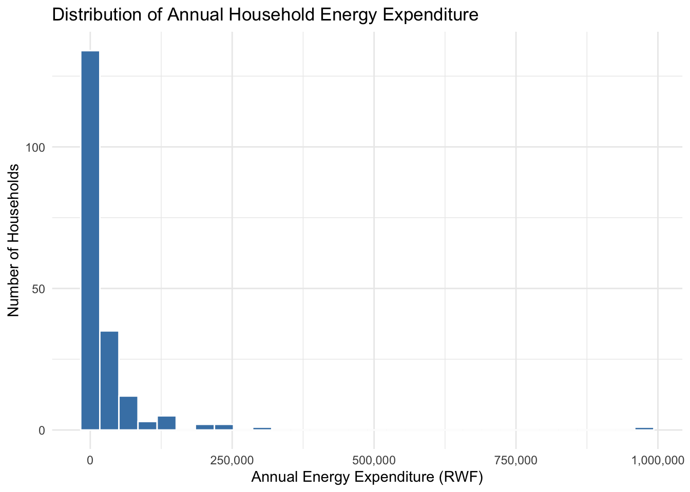
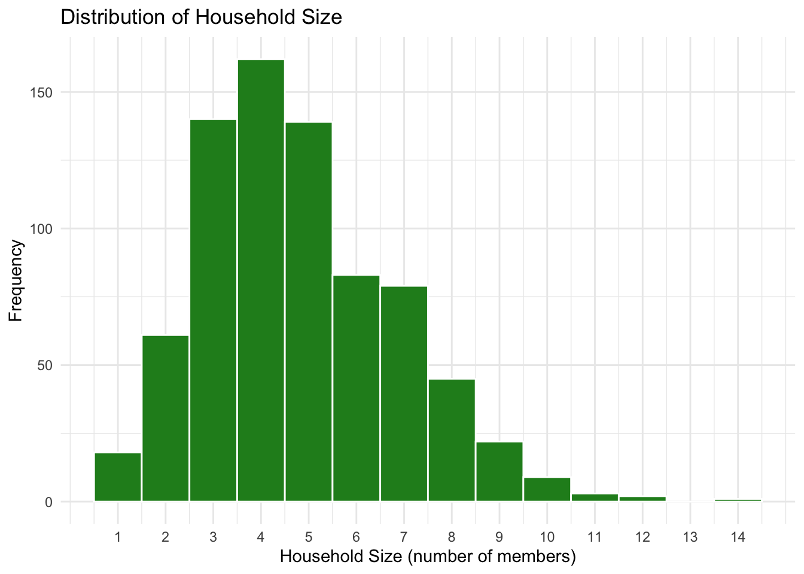
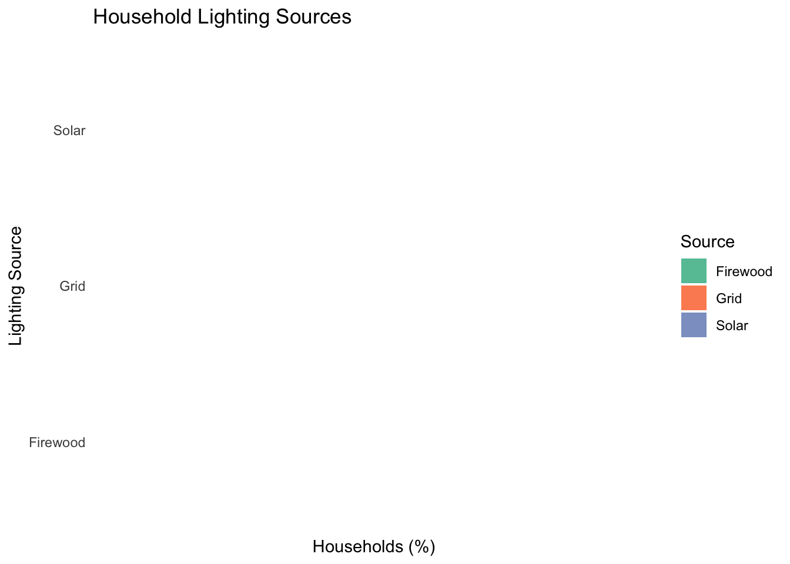
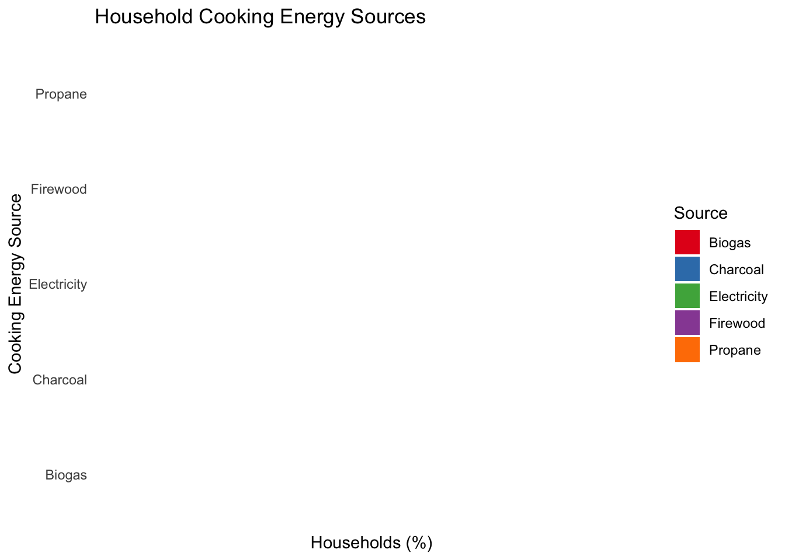
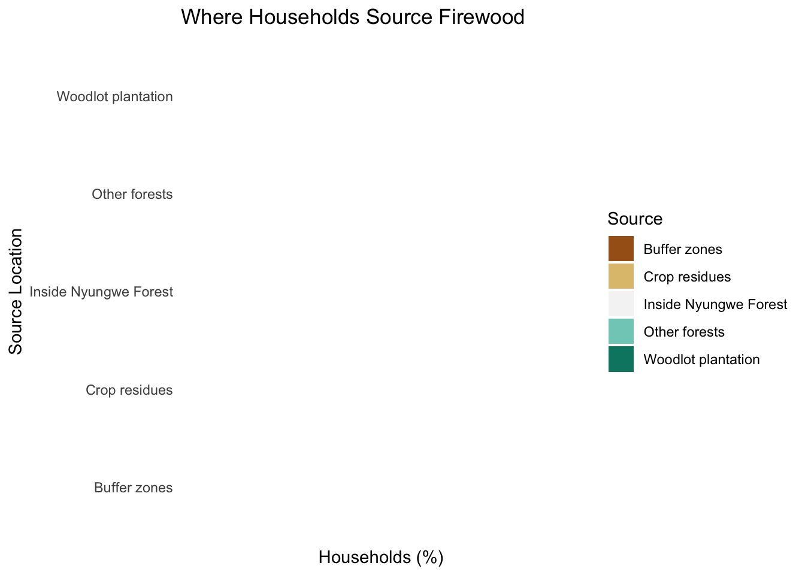

![]()
library(tidyverse)
library(readxl)
library(janitor)
library(here)
park_data <- read_excel(
here("data/raw/XXX_Park_Conservation_Feasability_study.xlsx"),
sheet = "Nyungwe_feasibility"
)Data Exploration for Park Conservation Assessment
Introduction
This report explores household survey data collected during a feasibility study for conservation and sustainable livelihood interventions around Nyungwe National Park, Rwanda. The dataset contains 765 household survey responses and more than 500 variables describing household demographics, livelihoods, energy use, expenditure, and dependence on forest resources.
The purpose of this report is to summarize household characteristics and examine patterns of energy use that can support conservation planning and future interventions around Nyungwe National Park.
Methods
Data for this study were collected from 765 households through a household survey conducted in communities surrounding Nyungwe National Park. The data collection was implemented by a team of trained enumerators and supervisors using a structured questionnaire programmed in KoboToolbox. Respondents were randomly selected from households located in selected sectors and villages within Nyamagabe, Rusizi, Nyamasheke, and Nyaruguru districts. The survey was conducted in October 2022 and collected information on household demographic characteristics, livelihood activities, income sources, resource use, and community interactions with the protected area.
Reading the Data
Data Exploration Approach
Initial Data Tidying
# Clean column names to snake_case
park_data_clean <- park_data %>%
clean_names()
# Check the new names
names(park_data_clean) %>% head(20) [1] "starttime"
[2] "endtime"
[3] "interviewer_name"
[4] "hello_my_name_is_enum1_and_i_am_part_of_enumerator_team_which_is_conducting_a_feasibility_study_for_a_redd_project_as_detailed_in_the_attached_terms_of_reference_which_is_part_of_this_agreement_in_nyamagabe_rusizi_nyamasheke_and_nyaruguru_we_need_to_have_a_discussion_with_you_now_if_you_agree_to_participate_in_this_survey_we_will_ask_you_some_questions_related_to_socio_economic_and_demographics_aspects_as_you_have_been_randomly_selected_to_participate_in_this_assessment_and_your_feedback_and_cooperation_will_be_highly_appreciated_and_confidentially_kept_do_you_agree_with_the_consent"
[5] "name_of_the_respondent"
[6] "demographic_characteristics_of_the_respondents"
[7] "x1_1_gender_of_the_household_head"
[8] "x1_3_what_is_your_marital_status_of_the_head_of_the_respondent"
[9] "x1_2_what_is_the_size_number_of_members_of_your_household"
[10] "name_of_other_household_member_no_1"
[11] "relation_of_a4_1_1_to_the_head_of_the_household"
[12] "sex_of_a4_1_1"
[13] "level_of_education_of_a4_1_1"
[14] "main_activity_of_a4_1_1"
[15] "age_of_a4_1_1"
[16] "name_of_other_household_member_no_2"
[17] "relation_of_a4_2_1_to_the_head_of_the_household"
[18] "sex_of_a4_2_1"
[19] "level_of_education_of_a4_2_1"
[20] "main_activity_of_a4_2_1" # Issue 1: Convert submission date/time to proper date format
park_data_clean <- park_data_clean %>%
mutate(starttime = ymd_hms(starttime))
# Issue 2: Fix inconsistent/missing values in a key column (example: energy spend)
park_data_clean <- park_data_clean %>%
mutate(amount_of_money_allocated_to_energy_annually =
as.numeric(amount_of_money_allocated_to_energy_annually))
# Issue 3: Standardize a categorical column (example placeholder - adjust to a real column)
# park_data_clean <- park_data_clean %>%
# mutate(some_column = str_to_lower(str_trim(some_column)))
# Save the tidied data
write_csv(park_data_clean, here("data/processed/nyungwe_feasibility_tidied.csv"))Results
Initial Data Exploration
# View structure
glimpse(park_data)Rows: 765
Columns: 539
$ starttime <chr> …
$ endtime <chr> …
$ `Interviewer name` <chr> …
$ `Hello, my name is ${Enum1} and I am part of enumerator team which is conducting a feasibility study for a REDD+ project as detailed in the attached terms of reference which is part of this agreement in Nyamagabe, Rusizi, Nyamasheke and Nyaruguru. We need to have a discussion with you now. If you agree to participate in this survey, we will ask you some questions related to socio-economic and demographics aspects. As you have been randomly selected to participate in this assessment and your feedback and cooperation will be highly appreciated and confidentially kept. Do you agree with the consent?` <chr> …
$ `Name of the Respondent` <dbl> …
$ `Demographic characteristics of the respondents` <lgl> …
$ `1.1. Gender of the household head` <chr> …
$ `1.3. What is your marital status of the head of the respondent?` <chr> …
$ `1.2. What is the size (number of members) of your household?` <chr> …
$ `Name of other Household member no 1` <chr> …
$ `Relation of "${A4_1_1}" to the Head of the Household` <chr> …
$ `Sex of "${A4_1_1}"` <chr> …
$ `Level of education of "${A4_1_1}"` <chr> …
$ `Main Activity of "${A4_1_1}"` <chr> …
$ `Age of "${A4_1_1}"` <chr> …
$ `Name of other Household member no 2` <chr> …
$ `Relation of "${A4_2_1}" to the Head of the Household` <chr> …
$ `Sex of "${A4_2_1}"` <chr> …
$ `Level of education of "${A4_2_1}"` <chr> …
$ `Main Activity of "${A4_2_1}"` <chr> …
$ `Age of "${A4_2_1}"` <chr> …
$ `Name of other Household member no 3` <chr> …
$ `Relation of "${A4_3_1}" to the Head of the Household` <chr> …
$ `Sex of "${A4_3_1}"` <chr> …
$ `Level of education of "${A4_3_1}"` <chr> …
$ `Main Activity of "${A4_3_1}"` <chr> …
$ `Age of "${A4_3_1}"` <chr> …
$ `Name of other Household member no 4` <chr> …
$ `Relation of "${A4_4_1}" to the Head of the Household` <chr> …
$ `Sex of "${A4_4_1}"` <chr> …
$ `Level of education of "${A4_4_1}"` <chr> …
$ `Main Activity of "${A4_4_1}"` <chr> …
$ `Age of "${A4_4_1}"` <chr> …
$ `2.1. What is your age? (in years of the HH head)` <dbl> …
$ `2.2. Have you attended any formal education?` <chr> …
$ `2.3. what is the highest level of education completed?` <chr> …
$ `2.4. What is the main occupation of the Head Of the Household?` <chr> …
$ `Access to water` <lgl> …
$ `3.1. What is the source of the drinking water use at your household? (Choose many as possible)` <chr> …
$ `3.1. What is the source of the drinking water use at your household? (Choose many as possible)/Water pipe` <chr> …
$ `3.1. What is the source of the drinking water use at your household? (Choose many as possible)/Water well` <chr> …
$ `3.1. What is the source of the drinking water use at your household? (Choose many as possible)/River` <chr> …
$ `3.1. What is the source of the drinking water use at your household? (Choose many as possible)/Rain water` <chr> …
$ `3.1. What is the source of the drinking water use at your household? (Choose many as possible)/Water from forest area` <chr> …
$ `3.1. What is the source of the drinking water use at your household? (Choose many as possible)/Bottled water` <chr> …
$ `3.1. What is the source of the drinking water use at your household? (Choose many as possible)/Other (please specifiy)` <chr> …
$ `3.3. What time (estimate in minutes) it takes you to get drinking water at your household?` <chr> …
$ `3.2. What is the source of water for general use at your household?` <chr> …
$ `3.2. What is the source of water for general use at your household?/Water pipe` <chr> …
$ `3.2. What is the source of water for general use at your household?/Water well` <chr> …
$ `3.2. What is the source of water for general use at your household?/River` <chr> …
$ `3.2. What is the source of water for general use at your household?/Rain water` <chr> …
$ `3.2. What is the source of water for general use at your household?/Water from forest area` <chr> …
$ `3.2. What is the source of water for general use at your household?/Bottled water` <chr> …
$ `3.2. What is the source of water for general use at your household?/Other (please specifiy)` <chr> …
$ `3.4. What time (estimates in minutes) it takes you it takes to get water for using at your household?` <chr> …
$ `Access to energy` <lgl> …
$ `4.1. What is the source of lighting in your house (Choose many as you can)?` <chr> …
$ `4.1. What is the source of lighting in your house (Choose many as you can)?/Firewood` <chr> …
$ `4.1. What is the source of lighting in your house (Choose many as you can)?/Genarator` <chr> …
$ `4.1. What is the source of lighting in your house (Choose many as you can)?/Solar energy` <chr> …
$ `4.1. What is the source of lighting in your house (Choose many as you can)?/Biogaz` <chr> …
$ `4.1. What is the source of lighting in your house (Choose many as you can)?/Kerosene lamp (Agatadowa)` <chr> …
$ `4.1. What is the source of lighting in your house (Choose many as you can)?/Electricity from grid` <chr> …
$ `4.1. What is the source of lighting in your house (Choose many as you can)?/Candle` <chr> …
$ `4.1. What is the source of lighting in your house (Choose many as you can)?/Torche` <chr> …
$ `4.1. What is the source of lighting in your house (Choose many as you can)?/other` <chr> …
$ `4.2. What is your main source of energy for cooking at your household (Choose many as you can)?` <chr> …
$ `4.2. What is your main source of energy for cooking at your household (Choose many as you can)?/Firewood` <chr> …
$ `4.2. What is your main source of energy for cooking at your household (Choose many as you can)?/Charcoal` <chr> …
$ `4.2. What is your main source of energy for cooking at your household (Choose many as you can)?/Propane Gaz` <chr> …
$ `4.2. What is your main source of energy for cooking at your household (Choose many as you can)?/Kerosene` <chr> …
$ `4.2. What is your main source of energy for cooking at your household (Choose many as you can)?/Biogaz` <chr> …
$ `4.2. What is your main source of energy for cooking at your household (Choose many as you can)?/electricity` <chr> …
$ `4.2. What is your main source of energy for cooking at your household (Choose many as you can)?/Other` <chr> …
$ `4.3. What is your cooking technology used at your household?` <chr> …
$ `4.3. What is your cooking technology used at your household?/Tree stones` <chr> …
$ `4.3. What is your cooking technology used at your household?/Use of improved cooking stoves` <chr> …
$ `4.3. What is your cooking technology used at your household?/Electrical stoves` <chr> …
$ `4.3. What is your cooking technology used at your household?/Gas stoves` <chr> …
$ `4.3. What is your cooking technology used at your household?/Biogaz` <chr> …
$ `4.3. What is your cooking technology used at your household?/Other` <chr> …
$ `4.4. Specifically, if U use firewood in both cases (lighting and/or cooking), where do source them?` <chr> …
$ `4.4. Specifically, if U use firewood in both cases (lighting and/or cooking), where do source them?/Inside the Nyungwe Forest` <chr> …
$ `4.4. Specifically, if U use firewood in both cases (lighting and/or cooking), where do source them?/From other forests trees` <chr> …
$ `4.4. Specifically, if U use firewood in both cases (lighting and/or cooking), where do source them?/Buffer zones` <chr> …
$ `4.4. Specifically, if U use firewood in both cases (lighting and/or cooking), where do source them?/Woodrot plantation` <chr> …
$ `4.4. Specifically, if U use firewood in both cases (lighting and/or cooking), where do source them?/Crops residues` <chr> …
$ `4.4. Specifically, if U use firewood in both cases (lighting and/or cooking), where do source them?/Others` <chr> …
$ `4.5. If you use charcoal in cooking, where do you source them?` <chr> …
$ `4.5. If you use charcoal in cooking, where do you source them?/Traders in our neigboring area` <chr> …
$ `4.5. If you use charcoal in cooking, where do you source them?/Made by myself from the timbers and/or wood from the NNP` <chr> …
$ `4.5. If you use charcoal in cooking, where do you source them?/Made by myself from timbers and wood collected from the forest` <chr> …
$ `4.5. If you use charcoal in cooking, where do you source them?/Made by myself from timbers and wood collected from the the buffer zone` <chr> …
$ `4.5. If you use charcoal in cooking, where do you source them?/Made by myself from timbers and wood collected from the woodlot plantation` <chr> …
$ `4.5. If you use charcoal in cooking, where do you source them?/Ikindi` <chr> …
$ `[5] Construction materials of the house at the household level` <lgl> …
$ `5.1. Walls of the house` <chr> …
$ `5.1. Walls of the house/Blocks` <chr> …
$ `5.1. Walls of the house/Bricks` <chr> …
$ `5.1. Walls of the house/Adobe bricks` <chr> …
$ `5.1. Walls of the house/Wood` <chr> …
$ `5.1. Walls of the house/Cement` <chr> …
$ `5.1. Walls of the house/Ikindi` <chr> …
$ `5.2. Roof` <chr> …
$ `5.2. Roof/Iron sheets` <chr> …
$ `5.2. Roof/Grasses/leaves` <chr> …
$ `5.2. Roof/Tiles` <chr> …
$ `5.2. Roof/Asbestos` <chr> …
$ `5.2. Roof/Others (Specify)` <chr> …
$ `5.3. Foundation` <chr> …
$ `5.3. Foundation/Cements/Concrete` <chr> …
$ `5.3. Foundation/Stones` <chr> …
$ `5.3. Foundation/Bricks` <chr> …
$ `5.3. Foundation/Adobe bricks` <chr> …
$ `5.3. Foundation/Wood` <chr> …
$ `5.3. Foundation/Ikindi` <chr> …
$ `5.4. Specifically, if you use wood,on wall, where do you source them?` <chr> …
$ `5.4. Specifically, if you use wood,on wall, where do you source them?/Inside Nyungwe forests` <chr> …
$ `5.4. Specifically, if you use wood,on wall, where do you source them?/In the buffer Zone` <chr> …
$ `5.4. Specifically, if you use wood,on wall, where do you source them?/In the woodlot plantation` <chr> …
$ `5.4. Specifically, if you use wood,on wall, where do you source them?/Famland` <chr> …
$ `5.4. Specifically, if you use wood,on wall, where do you source them?/Ikindi` <chr> …
$ `[6] Ownership of assets at the households` <lgl> …
$ `6.1 what kind of asset you have at your household?` <chr> …
$ `6.1 what kind of asset you have at your household?/None` <chr> …
$ `6.1 what kind of asset you have at your household?/Automobile` <chr> …
$ `6.1 what kind of asset you have at your household?/Motocycle` <chr> …
$ `6.1 what kind of asset you have at your household?/Bicycle` <chr> …
$ `6.1 what kind of asset you have at your household?/Generator` <chr> …
$ `6.1 what kind of asset you have at your household?/Television` <chr> …
$ `6.1 what kind of asset you have at your household?/Mobile phone` <chr> …
$ `6.1 what kind of asset you have at your household?/Wheelbarrow` <chr> …
$ `6.1 what kind of asset you have at your household?/Hoes` <chr> …
$ `6.1 what kind of asset you have at your household?/Radio` <chr> …
$ `6.1 what kind of asset you have at your household?/other` <chr> …
$ `Specify other...137` <chr> …
$ `[7] Livestock ownership` <lgl> …
$ `7.1. Do you have livestock animals?` <chr> …
$ `7.2. what type of livestock animal do you have at your household? (Tick as may as you can)` <chr> …
$ `7.2. what type of livestock animal do you have at your household? (Tick as may as you can)/Cow` <chr> …
$ `7.2. what type of livestock animal do you have at your household? (Tick as may as you can)/Pigs` <chr> …
$ `7.2. what type of livestock animal do you have at your household? (Tick as may as you can)/Goat` <chr> …
$ `7.2. what type of livestock animal do you have at your household? (Tick as may as you can)/Sheep` <chr> …
$ `7.2. what type of livestock animal do you have at your household? (Tick as may as you can)/Chicken` <chr> …
$ `7.2. what type of livestock animal do you have at your household? (Tick as may as you can)/Rabbit` <chr> …
$ `7.2. what type of livestock animal do you have at your household? (Tick as may as you can)/Duck` <chr> …
$ `7.2. what type of livestock animal do you have at your household? (Tick as may as you can)/Others (Specify)` <chr> …
$ `7.4. Number of the Cow` <chr> …
$ `7.4. Number of the Pig` <chr> …
$ `7.4. Number of the Goat` <chr> …
$ `7.4. Number of the Sheep` <chr> …
$ `7.4. Number of the Chicken` <chr> …
$ `7.4. Number of the rabbit` <chr> …
$ `7.4. Number of the Duck` <lgl> …
$ `7.4. Number of the other animals` <lgl> …
$ `7.5. What is the methods of keeping your livestock` <chr> …
$ `7.6. where do you graze your livestock animals? (Tick as many as you can)` <chr> …
$ `7.6. where do you graze your livestock animals? (Tick as many as you can)/In Nyungwe forest` <chr> …
$ `7.6. where do you graze your livestock animals? (Tick as many as you can)/In the buffer zone` <chr> …
$ `7.6. where do you graze your livestock animals? (Tick as many as you can)/In the woodlots plantation` <chr> …
$ `7.6. where do you graze your livestock animals? (Tick as many as you can)/Fallow area` <chr> …
$ `7.6. where do you graze your livestock animals? (Tick as many as you can)/Area sourrounding my residential area` <chr> …
$ `7.6. where do you graze your livestock animals? (Tick as many as you can)/Farming areas` <chr> …
$ `7.6. where do you graze your livestock animals? (Tick as many as you can)/Ikindi` <chr> …
$ `7.7. If No, where do you source feeds for your livestock animals?` <chr> …
$ `7.7. If No, where do you source feeds for your livestock animals?/In Nyungwe forest` <chr> …
$ `7.7. If No, where do you source feeds for your livestock animals?/In the buffer zone` <chr> …
$ `7.7. If No, where do you source feeds for your livestock animals?/In the woodlots plantation` <chr> …
$ `7.7. If No, where do you source feeds for your livestock animals?/Fallow area` <chr> …
$ `7.7. If No, where do you source feeds for your livestock animals?/Area sourrounding my residential area` <chr> …
$ `7.7. If No, where do you source feeds for your livestock animals?/Farming areas` <chr> …
$ `7.7. If No, where do you source feeds for your livestock animals?/Ikindi` <chr> …
$ `[8] Land ownership and use` <lgl> …
$ `8.1. Do you have land with land title?` <chr> …
$ `8.2. 1 what is the area (ha) ?` <chr> …
$ `8.2. 2 what is the location?` <chr> …
$ `8.2. 2 what is the location?/Inside the forest` <chr> …
$ `8.2. 2 what is the location?/Outside the forest` <chr> …
$ `8.2. 2 what is the location?/Outside but very near the forest` <chr> …
$ `8.2. 2 what is the location?/Ikindi` <chr> …
$ `8.3. What is the mode of acquisition of your land? (choose as many as you can)` <chr> …
$ `8.3. What is the mode of acquisition of your land? (choose as many as you can)/Gift from the Government` <chr> …
$ `8.3. What is the mode of acquisition of your land? (choose as many as you can)/Purchase from others villagers` <chr> …
$ `8.3. What is the mode of acquisition of your land? (choose as many as you can)/Heritage` <chr> …
$ `8.3. What is the mode of acquisition of your land? (choose as many as you can)/Borrow/rent` <chr> …
$ `8.3. What is the mode of acquisition of your land? (choose as many as you can)/Ikindi` <chr> …
$ `8.3. What is the mode of acquisition of your land? (choose as many as you can)/No land` <chr> …
$ `8.4. How your land is allocated (please mention the size in hectare?) (Tick as many as can)` <chr> …
$ `8.4. How your land is allocated (please mention the size in hectare?) (Tick as many as can)/Cultivation land of staple crops` <chr> …
$ `8.4. How your land is allocated (please mention the size in hectare?) (Tick as many as can)/Growing cash crops` <chr> …
$ `8.4. How your land is allocated (please mention the size in hectare?) (Tick as many as can)/Non-cultivation land /Fallow` <chr> …
$ `8.4. How your land is allocated (please mention the size in hectare?) (Tick as many as can)/Forestry trees` <chr> …
$ `8.4. How your land is allocated (please mention the size in hectare?) (Tick as many as can)/Pasture` <chr> …
$ `8.4. How your land is allocated (please mention the size in hectare?) (Tick as many as can)/Woodlot plantation` <chr> …
$ `8.4. How your land is allocated (please mention the size in hectare?) (Tick as many as can)/Agroforestry and fruits trees` <chr> …
$ `8.4. How your land is allocated (please mention the size in hectare?) (Tick as many as can)/Rent a part of my land` <chr> …
$ `8.4. How your land is allocated (please mention the size in hectare?) (Tick as many as can)/Other (Please specify)` <chr> …
$ `Are allocated to Cultivation land of staple crops` <chr> …
$ `Area allocated to Growing cash crops` <chr> …
$ `Area allocated to Non-cultivation land /Fallow` <chr> …
$ `Area allocated to Forestry trees` <chr> …
$ `Area allocated to Pasture` <lgl> …
$ `Area allocated to Woodlot plantation` <chr> …
$ `Area allocated to Agroforestry and fruits trees` <chr> …
$ `Area allocated to Rent a part of my land` <chr> …
$ `Area allocated to Other (Please specify)` <chr> …
$ `Do you practice agriculture?` <chr> …
$ `8.5. Generally, what are the main crops do you grow at your cultivated land? (Please tick as many as you can per order of importance)` <chr> …
$ `8.5. Generally, what are the main crops do you grow at your cultivated land? (Please tick as many as you can per order of importance)/Beans` <chr> …
$ `8.5. Generally, what are the main crops do you grow at your cultivated land? (Please tick as many as you can per order of importance)/Cassava` <chr> …
$ `8.5. Generally, what are the main crops do you grow at your cultivated land? (Please tick as many as you can per order of importance)/Banana fruits` <chr> …
$ `8.5. Generally, what are the main crops do you grow at your cultivated land? (Please tick as many as you can per order of importance)/Horticulture` <chr> …
$ `8.5. Generally, what are the main crops do you grow at your cultivated land? (Please tick as many as you can per order of importance)/Peas` <chr> …
$ `8.5. Generally, what are the main crops do you grow at your cultivated land? (Please tick as many as you can per order of importance)/Banana` <chr> …
$ `8.5. Generally, what are the main crops do you grow at your cultivated land? (Please tick as many as you can per order of importance)/Sweet potatoes` <chr> …
$ `8.5. Generally, what are the main crops do you grow at your cultivated land? (Please tick as many as you can per order of importance)/Irish potatoes` <chr> …
$ `8.5. Generally, what are the main crops do you grow at your cultivated land? (Please tick as many as you can per order of importance)/Sorghum` <chr> …
$ `8.5. Generally, what are the main crops do you grow at your cultivated land? (Please tick as many as you can per order of importance)/Maize` <chr> …
$ `8.5. Generally, what are the main crops do you grow at your cultivated land? (Please tick as many as you can per order of importance)/Rice` <chr> …
$ `8.5. Generally, what are the main crops do you grow at your cultivated land? (Please tick as many as you can per order of importance)/Wheat` <chr> …
$ `8.5. Generally, what are the main crops do you grow at your cultivated land? (Please tick as many as you can per order of importance)/Coffee` <chr> …
$ `8.5. Generally, what are the main crops do you grow at your cultivated land? (Please tick as many as you can per order of importance)/Tea` <chr> …
$ `8.5. Generally, what are the main crops do you grow at your cultivated land? (Please tick as many as you can per order of importance)/Ikindi` <chr> …
$ `8.6. What are the cropping systems do you adopt at your farm?` <chr> …
$ `8.6. What are the cropping systems do you adopt at your farm?/Mono-cropping` <chr> …
$ `8.6. What are the cropping systems do you adopt at your farm?/Crop rotation` <chr> …
$ `8.6. What are the cropping systems do you adopt at your farm?/ntercropping` <chr> …
$ `8.6. What are the cropping systems do you adopt at your farm?/Ikindi` <chr> …
$ `8.7. For perennial crops coffee how many years of your plantation?` <lgl> …
$ `8.7. For perennial crops Tea, how many years of your plantation?` <lgl> …
$ `8.8. What is the challenges in your agriculture production activities? (Tick as many as you can)` <chr> …
$ `8.8. What is the challenges in your agriculture production activities? (Tick as many as you can)/Lack of improved seeds and/or seedlings` <chr> …
$ `8.8. What is the challenges in your agriculture production activities? (Tick as many as you can)/Lack of chemical and/or organic fertilizers and pesticides` <chr> …
$ `8.8. What is the challenges in your agriculture production activities? (Tick as many as you can)/Pest and diseases` <chr> …
$ `8.8. What is the challenges in your agriculture production activities? (Tick as many as you can)/Lack of labor` <chr> …
$ `8.8. What is the challenges in your agriculture production activities? (Tick as many as you can)/Lack of finance` <chr> …
$ `8.8. What is the challenges in your agriculture production activities? (Tick as many as you can)/Lack of sufficient land` <chr> …
$ `8.8. What is the challenges in your agriculture production activities? (Tick as many as you can)/Lack of skills` <chr> …
$ `8.8. What is the challenges in your agriculture production activities? (Tick as many as you can)/ikindi(kivuge)` <chr> …
$ `8.8. What is the challenges in your agriculture production activities? (Tick as many as you can)/Ikindi` <chr> …
$ `Specify other...242` <chr> …
$ `8.9. Do you sell a part of food crops grown at your farm?` <chr> …
$ `8.10. how much do you keep for the household consumption? (Please put quantity in Kgs)` <chr> …
$ `8.11. where do you sell do you sell your production? (Please tick as many as you can)` <chr> …
$ `8.12. Specifically, where do you sell your cash crops (mainly coffee and tea) grown on the farm?` <lgl> …
$ `8.13. what is your purpose in doing so?` <chr> …
$ `8.13. what is your purpose in doing so?/Selling timber` <chr> …
$ `8.13. what is your purpose in doing so?/Fuelwood` <chr> …
$ `8.13. what is your purpose in doing so?/Wood for construction` <chr> …
$ `8.13. what is your purpose in doing so?/Making and selling charcoals` <chr> …
$ `8.13. what is your purpose in doing so?/Ikindi` <chr> …
$ `8.14. Are you aware and/or interested in planting agroforestry at your farm?` <chr> …
$ `8.15. If yes, how many and species of agroforestry trees do you think can be planted in your farm for shade and soil fertility? (please put number` <chr> …
$ `8.15. If yes, how many and species of agroforestry trees do you think can be planted in your farm for shade and soil fertility? (please put number/Calliandra sp.` <chr> …
$ `8.15. If yes, how many and species of agroforestry trees do you think can be planted in your farm for shade and soil fertility? (please put number/Eucalyptus sp.` <chr> …
$ `8.15. If yes, how many and species of agroforestry trees do you think can be planted in your farm for shade and soil fertility? (please put number/Leucaena leucecephala` <chr> …
$ `8.15. If yes, how many and species of agroforestry trees do you think can be planted in your farm for shade and soil fertility? (please put number/Acacia nilotica` <chr> …
$ `8.15. If yes, how many and species of agroforestry trees do you think can be planted in your farm for shade and soil fertility? (please put number/Grevillea robusta` <chr> …
$ `8.15. If yes, how many and species of agroforestry trees do you think can be planted in your farm for shade and soil fertility? (please put number/Alnus acuminate Alinusi` <chr> …
$ `8.15. If yes, how many and species of agroforestry trees do you think can be planted in your farm for shade and soil fertility? (please put number/Avocado` <chr> …
$ `8.15. If yes, how many and species of agroforestry trees do you think can be planted in your farm for shade and soil fertility? (please put number/Guayava tree` <chr> …
$ `8.15. If yes, how many and species of agroforestry trees do you think can be planted in your farm for shade and soil fertility? (please put number/Other` <chr> …
$ `Specify other...264` <lgl> …
$ `Number of Calliandra sp. do you think can be planted in your farm for shade and soil fertility?...265` <chr> …
$ `Number of Eucalyptus sp.. do you think can be planted in your farm for shade and soil fertility?...266` <chr> …
$ `Number of Leucaena leucecephala. do you think can be planted in your farm for shade and soil fertility?...267` <chr> …
$ `Number of Acacia nilotica. do you think can be planted in your farm for shade and soil fertility?...268` <chr> …
$ `Number of Grevillea robusta. do you think can be planted in your farm for shade and soil fertility?...269` <chr> …
$ `Number of Alnus acuminate Alinusi. do you think can be planted in your farm for shade and soil fertility?...270` <chr> …
$ `Number of Avocado. do you think can be planted in your farm for shade and soil fertility?...271` <chr> …
$ `Number of Guayava tree. do you think can be planted in your farm for shade and soil fertility?...272` <chr> …
$ `Number of ${H15_other} do you think can be planted in your farm for shade and soil fertility?` <chr> …
$ `8.16. If yes, how many and species of agroforestry trees do you think you can plant on boundaries of your farm and/or plot?` <chr> …
$ `Specify other...275` <chr> …
$ `Number of Calliandra sp. do you think can be planted in your farm for shade and soil fertility?...276` <chr> …
$ `Number of Eucalyptus sp.. do you think can be planted in your farm for shade and soil fertility?...277` <chr> …
$ `Number of Leucaena leucecephala. do you think can be planted in your farm for shade and soil fertility?...278` <chr> …
$ `Number of Acacia nilotica. do you think can be planted in your farm for shade and soil fertility?...279` <chr> …
$ `Number of Grevillea robusta. do you think can be planted in your farm for shade and soil fertility?...280` <chr> …
$ `Number of Alnus acuminate Alinusi. do you think can be planted in your farm for shade and soil fertility?...281` <chr> …
$ `Number of Avocado. do you think can be planted in your farm for shade and soil fertility?...282` <chr> …
$ `Number of Guayava tree. do you think can be planted in your farm for shade and soil fertility?...283` <chr> …
$ `Number of ${H16_other} do you think can be planted in your farm for shade and soil fertility?` <chr> …
$ `Specify other...285` <lgl> …
$ `8.17. Do you have in woodlot trees planting?` <chr> …
$ `8.22. If no, why?` <chr> …
$ `8.18. If No, are you interested in woodlot planting?` <chr> …
$ `8.19., what is the final use your woodlot plantation?` <chr> …
$ `8.19., what is the density of your woodlot plantation?` <chr> …
$ `[9] Satisfaction about living conditions` <lgl> …
$ `1. Quality of the water volume for daily use at the household level` <chr> …
$ `2. Quantity of water volume for daily use at the household` <chr> …
$ `3. Quality for drinking water at your household` <chr> …
$ `4. Sufficiency of quantity of drinking water at your household` <chr> …
$ `5. Sufficiency of food for daily life` <chr> …
$ `6. Sufficiency in amount of crop productivities` <chr> …
$ `7. Situation of the health service` <chr> …
$ `8. Situation of education of your children` <chr> …
$ `9. Situation of the transportation` <chr> …
$ `10. Accessibility to roads for vehicles` <chr> …
$ `11. How do you go outside to the main road?` <chr> …
$ `11. How do you go outside to the main road?/By bicycle` <chr> …
$ `11. How do you go outside to the main road?/Motocycle` <chr> …
$ `11. How do you go outside to the main road?/Public transport` <chr> …
$ `11. How do you go outside to the main road?/By walk` <chr> …
$ `11. How do you go outside to the main road?/Ikindi` <chr> …
$ `[10] Natural resources usage` <lgl> …
$ `10.1. How you use natural resources in your area? (Choose as many as you can)` <chr> …
$ `10.1. How you use natural resources in your area? (Choose as many as you can)/Fuel wood collection` <chr> …
$ `10.1. How you use natural resources in your area? (Choose as many as you can)/Timber collection` <chr> …
$ `10.1. How you use natural resources in your area? (Choose as many as you can)/Beekepping activities` <chr> …
$ `10.1. How you use natural resources in your area? (Choose as many as you can)/Animal hunting` <chr> …
$ `10.1. How you use natural resources in your area? (Choose as many as you can)/Non timber forests products (bamboo, medicines, feeds for animals, etc) collection` <chr> …
$ `10.1. How you use natural resources in your area? (Choose as many as you can)/Logging activities` <chr> …
$ `10.1. How you use natural resources in your area? (Choose as many as you can)/Minerals exploration` <chr> …
$ `10.1. How you use natural resources in your area? (Choose as many as you can)/Ikindi` <chr> …
$ `10.2. Specifically, what is the source of fuelwood ?` <chr> …
$ `10.2. Specifically, what is the source of fuelwood ?/Inside the natural forest` <chr> …
$ `10.2. Specifically, what is the source of fuelwood ?/In the planted forest` <chr> …
$ `10.2. Specifically, what is the source of fuelwood ?/Home garden` <chr> …
$ `10.2. Specifically, what is the source of fuelwood ?/Other (please, specify)` <chr> …
$ `10.2. Specifically, what is the type of fuelwood ?` <chr> …
$ `10.2. Specifically, what is the use of fuelwood ?` <chr> …
$ `10.3. What is the estimated distance (in kms) to from your home to the source of fuelwood?` <chr> …
$ `10.4. what are buyers of fuel wood ?` <chr> …
$ `10.4. what are buyers of fuel wood ?/Neigbors` <chr> …
$ `10.4. what are buyers of fuel wood ?/Schools` <chr> …
$ `10.4. what are buyers of fuel wood ?/Brick makers` <chr> …
$ `10.4. what are buyers of fuel wood ?/Tea factories` <chr> …
$ `10.4. what are buyers of fuel wood ?/Ikindi` <chr> …
$ `10.4. what are volume per week of fuel wood do you sell?` <chr> …
$ `10.4. what are volume per week of fuel wood do you use at domestic?` <chr> …
$ `10.4. What is the amount of money you should pay if bought these firewood per week?` <chr> …
$ `10.4. What is the amount of money you get after selling firewood per week?` <chr> …
$ `10.5. Who is involved in the fuelwood collection?` <chr> …
$ `10.5. Who is involved in the fuelwood collection?/Husband` <chr> …
$ `10.5. Who is involved in the fuelwood collection?/Spouse` <chr> …
$ `10.5. Who is involved in the fuelwood collection?/Children` <chr> …
$ `10.5. Who is involved in the fuelwood collection?/Other(please specify)` <chr> …
$ `10.6. Specifically, what is the source of timber?` <chr> …
$ `10.6. Specifically, what is the source of timber?/Inside the Nyungwe forest` <chr> …
$ `10.6. Specifically, what is the source of timber?/In the planted forest` <chr> …
$ `10.6. Specifically, what is the source of timber?/In his/her woodlot` <chr> …
$ `10.6. Specifically, what is the source of timber?/In the buffer zone` <chr> …
$ `10.6. Specifically, what is the source of timber?/Ikindi` <chr> …
$ `10.6. Specifically, what is the type of timber?` <chr> …
$ `10.6. Specifically, what is the use of timber?` <chr> …
$ `10.7. If you sell timber, to whom do you sell?` <chr> …
$ `10.8. What is the estimated distance (in kms) from your home to source of timbers?` <chr> …
$ `10.9. Specifically, what is the source of honey?` <chr> …
$ `10.9. Specifically, what is the source of honey?/Inside the Nyungwe forests` <chr> …
$ `10.9. Specifically, what is the source of honey?/In the planted forests` <chr> …
$ `10.9. Specifically, what is the source of honey?/In his/her woodlot` <chr> …
$ `10.9. Specifically, what is the source of honey?/In the buffer zone` <chr> …
$ `10.9. Specifically, what is the source of honey?/Ikindi` <chr> …
$ `10.9. Specifically, what is the use of honey?` <chr> …
$ `10.7. If you sell honey, to whom do you sell?` <chr> …
$ `10.11. What types of beehives in you beekeeping activities?` <chr> …
$ `10.11. What types of beehives in you beekeeping activities?/Traditional beehives` <chr> …
$ `10.11. What types of beehives in you beekeeping activities?/Langstroth hives` <chr> …
$ `10.11. What types of beehives in you beekeeping activities?/Kenyane top-bar hive` <chr> …
$ `10.12. What is the type of materials used for fashioning your beehives` <chr> …
$ `10.12. What is the type of materials used for fashioning your beehives/Hollow tree logs` <chr> …
$ `10.12. What is the type of materials used for fashioning your beehives/Tree bark` <chr> …
$ `10.12. What is the type of materials used for fashioning your beehives/Tree leaves` <chr> …
$ `10.12. What is the type of materials used for fashioning your beehives/Bamboo` <chr> …
$ `10.12. What is the type of materials used for fashioning your beehives/Grasses` <chr> …
$ `10.12. What is the type of materials used for fashioning your beehives/Wood` <chr> …
$ `10.12. What is the type of materials used for fashioning your beehives/Ikindi` <chr> …
$ `10.12. What is the source of materials used for fashioning your beehives` <chr> …
$ `10.12. What is the source of materials used for fashioning your beehives/Inside the Nyungwe forests` <chr> …
$ `10.12. What is the source of materials used for fashioning your beehives/In the planted forests` <chr> …
$ `10.12. What is the source of materials used for fashioning your beehives/In his/her woodlot` <chr> …
$ `10.12. What is the source of materials used for fashioning your beehives/In the buffer zone` <chr> …
$ `10.12. What is the source of materials used for fashioning your beehives/Others(please specify` <chr> …
$ `10.13. Specifically, if you use Fuel wood collection from the forest, how many time do you frequent the area? (Please per each option of natural resource use)` <chr> …
$ `10.13. Specifically, if you use Timber collection from the forest, how many time do you frequent the area? (Please per each option of natural resource use)` <chr> …
$ `10.13. Specifically, if you use Beekeeping activities from the forest, how many time do you frequent the area? (Please per each option of natural resource use)` <chr> …
$ `10.13. Specifically, if you use Animal hunting from the forest, how many time do you frequent the area? (Please per each option of natural resource use)` <chr> …
$ `10.13. Specifically, if you use Non timber forests products collection (bamboo, medicines, etc) from the forest, how many time do you frequent the area? (Please per each option of natural resource use)` <chr> …
$ `10.13. Specifically, if you use Logging activities from the forest, how many time do you frequent the area? (Please per each option of natural resource use)` <chr> …
$ `10.13. Specifically, if you use Minerals exploration from the forest, how many time do you frequent the area? (Please per each option of natural resource use)` <chr> …
$ `10.13. Specifically, if you use Others (please specify) from the forest, how many time do you frequent the area? (Please per each option of natural resource use)` <chr> …
$ `11.10. What is the estimated quantity of Fuelwood (in bundles) do you collect per week from the natural forest?` <chr> …
$ `11.10. What is the estimated quantity of Timber (in number of planks) do you collect per week from the natural forest?` <chr> …
$ `11.10. What is the estimated quantity of NFTPs (Honey) (In kgs)) do you collect per week from the natural forest?` <chr> …
$ `11.10. What is the estimated quantity of NTFPs(number of bandles)(Bamboos) do you collect per week from the natural forest?` <chr> …
$ `12. Source of income` <lgl> …
$ `11.1. Where do you get income among these On-fam activities ?` <chr> …
$ `11.1. Where do you get income among these On-fam activities ?/Crop productions` <chr> …
$ `11.1. Where do you get income among these On-fam activities ?/Livestock` <chr> …
$ `11.1. Where do you get income among these On-fam activities ?/Selling games of hunting` <chr> …
$ `11.1. Where do you get income among these On-fam activities ?/Selling firewood` <chr> …
$ `11.1. Where do you get income among these On-fam activities ?/Selling timber` <chr> …
$ `11.1. Where do you get income among these On-fam activities ?/Selling non timber fuel products` <chr> …
$ `11.1. Where do you get income among these On-fam activities ?/Other (specify)` <chr> …
$ `11.1. Where do you get income among these On-fam activities ?/none` <chr> …
$ `11.1. Where do you get income among these Off-fam activities ?` <chr> …
$ `11.1. Where do you get income among these Off-fam activities ?/Casual employment in non cultivation` <chr> …
$ `11.1. Where do you get income among these Off-fam activities ?/Business and trade` <chr> …
$ `11.1. Where do you get income among these Off-fam activities ?/Rental income` <chr> …
$ `11.1. Where do you get income among these Off-fam activities ?/Civil services` <chr> …
$ `11.1. Where do you get income among these Off-fam activities ?/Pension` <chr> …
$ `11.1. Where do you get income among these Off-fam activities ?/Remittences from relatives living abroad` <chr> …
$ `11.1. Where do you get income among these Off-fam activities ?/Other (please specify)` <chr> …
$ `11.1. Where do you get income among these Off-fam activities ?/Casual employment in cultivation` <chr> …
$ `11.1. Where do you get income among these Off-fam activities ?/none` <chr> …
$ `11.1. What is your annual income from Crop productions ?` <chr> …
$ `11.1. What is your annual income from Livestock ?` <chr> …
$ `11.1. What is your annual income from Selling games of hunting ?` <chr> …
$ `11.1. What is your annual income from Selling firewood ?` <chr> …
$ `11.1. What is your annual income from Selling timber ?` <chr> …
$ `11.1. What is your annual income from Selling non timber fuel products ?` <chr> …
$ `11.1. What is your annual income from other on farm activities ?` <chr> …
$ `11.1. What is your annual income from Casual employment in non cultivation ?...416` <chr> …
$ `11.1. What is your annual income from Casual employment in non cultivation ?...417` <chr> …
$ `11.1. What is your annual income from Business and trade ?` <chr> …
$ `11.1. What is your annual income from Rental income ?` <chr> …
$ `11.1. What is your annual income from Civil services ?` <chr> …
$ `11.1. What is your annual income from Pension ?` <chr> …
$ `11.1. What is your annual income from Remittences from relatives living abroad?` <chr> …
$ `11.1. What is your annual income from other off farm activities ?` <chr> …
$ `11.2. From the above mentioned categories, what is the FIRSTmost profitable activity...424` <chr> …
$ `11.2. From the above mentioned categories, what is the SECOND most profitable activity...425` <chr> …
$ `11.3. How do you allocate your generated income on HH expenditure?` <chr> …
$ `11.3. How do you allocate your generated income on HH expenditure?/Food` <chr> …
$ `11.3. How do you allocate your generated income on HH expenditure?/Energy` <chr> …
$ `11.3. How do you allocate your generated income on HH expenditure?/Water (drinking and daily use` <chr> …
$ `11.3. How do you allocate your generated income on HH expenditure?/Telephone` <chr> …
$ `11.3. How do you allocate your generated income on HH expenditure?/Health` <chr> …
$ `11.3. How do you allocate your generated income on HH expenditure?/Clothes` <chr> …
$ `11.3. How do you allocate your generated income on HH expenditure?/Transportation/travel` <chr> …
$ `11.3. How do you allocate your generated income on HH expenditure?/Wage for labor` <chr> …
$ `11.3. How do you allocate your generated income on HH expenditure?/none` <chr> …
$ `11.3. How do you allocate your generated income On-fam expenditures?` <chr> …
$ `11.3. How do you allocate your generated income On-fam expenditures?/Seeds and seedlings` <chr> …
$ `11.3. How do you allocate your generated income On-fam expenditures?/Agricultural tools` <chr> …
$ `11.3. How do you allocate your generated income On-fam expenditures?/Fertilizers and pesticides` <chr> …
$ `11.3. How do you allocate your generated income On-fam expenditures?/Grazing livestock animals` <chr> …
$ `11.3. How do you allocate your generated income On-fam expenditures?/Others (specify)` <chr> …
$ `11.3. How do you allocate your generated income On-fam expenditures?/noNe` <chr> …
$ `11.3. How do you allocate your generated income c Financial services ?` <chr> …
$ `11.3. How do you allocate your generated income c Financial services ?/Taxes` <chr> …
$ `11.3. How do you allocate your generated income c Financial services ?/Loan repayment` <chr> …
$ `11.3. How do you allocate your generated income c Financial services ?/Saving` <chr> …
$ `11.3. How do you allocate your generated income c Financial services ?/Assistance to family members` <chr> …
$ `11.3. How do you allocate your generated income c Financial services ?/None` <chr> …
$ `11.2. From the above mentioned categories, what is the FIRSTmost profitable activity...449` <chr> …
$ `11.2. From the above mentioned categories, what is the SECOND most profitable activity...450` <chr> …
$ `Amount of money allocated to food annually` <chr> …
$ `Amount of money allocated to Energy annually` <chr> …
$ `Amount of money allocated to Water (drinking and daily use) annually` <chr> …
$ `Amount of money allocated to Telephone annually` <chr> …
$ `Amount of money allocated to Health annually` <chr> …
$ `Amount of money allocated to Clothes annually` <chr> …
$ `Amount of money allocated to Transportation/travel annually` <chr> …
$ `Amount of money allocated to Wage for labor annually` <chr> …
$ `Amount of money allocated to Seeds and seedlings annually` <chr> …
$ `Amount of money allocated to Agricultural tools annually` <chr> …
$ `Amount of money allocated to Fertilizers and pesticides annually` <chr> …
$ `Amount of money allocated to Grazing livestock animals annually` <chr> …
$ `Amount of money allocated to Taxes annually` <chr> …
$ `Amount of money allocated to Loan repayment annually` <chr> …
$ `Amount of money allocated to the Saving annually` <chr> …
$ `Amount of money allocated to Assistance to family members annually` <chr> …
$ `11.4. Who makes the decision to spend generated income at the households?` <chr> …
$ `11.4. Who makes the decision to spend generated income at the households?/Husband` <chr> …
$ `11.4. Who makes the decision to spend generated income at the households?/Spouse` <chr> …
$ `11.4. Who makes the decision to spend generated income at the households?/Children` <chr> …
$ `11.4. Who makes the decision to spend generated income at the households?/Other(please specify)` <chr> …
$ `12. Group activities in the village` <lgl> …
$ `12.1. Do you know and/or aware of the customary rules in your village?` <chr> …
$ `12.2. If yes, which ones from the following list you know and/or aware ? (Please choose as many as you can)` <chr> …
$ `12.2. If yes, which ones from the following list you know and/or aware ? (Please choose as many as you can)/Natural resources management` <chr> …
$ `12.2. If yes, which ones from the following list you know and/or aware ? (Please choose as many as you can)/Forest management` <chr> …
$ `12.2. If yes, which ones from the following list you know and/or aware ? (Please choose as many as you can)/Land use and management` <chr> …
$ `12.2. If yes, which ones from the following list you know and/or aware ? (Please choose as many as you can)/Water resources use/tenure and management` <chr> …
$ `12.2. If yes, which ones from the following list you know and/or aware ? (Please choose as many as you can)/Faming practices` <chr> …
$ `12.2. If yes, which ones from the following list you know and/or aware ? (Please choose as many as you can)/Financial management` <chr> …
$ `12.2. If yes, which ones from the following list you know and/or aware ? (Please choose as many as you can)/Cooperative management` <chr> …
$ `12.2. If yes, which ones from the following list you know and/or aware ? (Please choose as many as you can)/Others(specify)` <chr> …
$ `12.3. Do you practice group activities in your village?` <chr> …
$ `12.4. in which ones you participate in from the following list? Please choose as mean as you can.` <chr> …
$ `12.4. in which ones you participate in from the following list? Please choose as mean as you can./Natural resources management` <chr> …
$ `12.4. in which ones you participate in from the following list? Please choose as mean as you can./Group farming` <chr> …
$ `12.4. in which ones you participate in from the following list? Please choose as mean as you can./Credit unions` <chr> …
$ `12.4. in which ones you participate in from the following list? Please choose as mean as you can./Social events` <chr> …
$ `12.4. in which ones you participate in from the following list? Please choose as mean as you can./House construction` <chr> …
$ `12.4. in which ones you participate in from the following list? Please choose as mean as you can./Ikindi` <chr> …
$ `12.5. What is your motivation in participating in groups activities? (Tick as many as you can)` <chr> …
$ `12.5. What is your motivation in participating in groups activities? (Tick as many as you can)/To access to financial services` <chr> …
$ `12.5. What is your motivation in participating in groups activities? (Tick as many as you can)/To access to the income of the resources` <chr> …
$ `12.5. What is your motivation in participating in groups activities? (Tick as many as you can)/To gain from labor resources` <chr> …
$ `12.5. What is your motivation in participating in groups activities? (Tick as many as you can)/To collect and share information` <chr> …
$ `12.5. What is your motivation in participating in groups activities? (Tick as many as you can)/Ikindi` <chr> …
$ `13. Alternative to the livelihoods` <lgl> …
$ `13.1. In previous 5 years, have you received any support?` <chr> …
$ `13.2. what type of support have you received ?(Choose as many as you can)` <chr> …
$ `13.2. what type of support have you received ?(Choose as many as you can)/Natural resource management` <chr> …
$ `13.2. what type of support have you received ?(Choose as many as you can)/Good agricultural techiques` <chr> …
$ `13.2. what type of support have you received ?(Choose as many as you can)/Plantation of trees` <chr> …
$ `13.2. what type of support have you received ?(Choose as many as you can)/Capacity building` <chr> …
$ `13.2. what type of support have you received ?(Choose as many as you can)/Business training` <chr> …
$ `13.2. what type of support have you received ?(Choose as many as you can)/Forest management` <chr> …
$ `13.2. what type of support have you received ?(Choose as many as you can)/Others (specify)` <chr> …
$ `13.2. from where have you received any support?(Choose as many as you can)` <chr> …
$ `13.2. from where have you received any support?(Choose as many as you can)/Government` <chr> …
$ `13.2. from where have you received any support?(Choose as many as you can)/NGOs` <chr> …
$ `13.2. from where have you received any support?(Choose as many as you can)/District/Sector` <chr> …
$ `13.2. from where have you received any support?(Choose as many as you can)/GoR agencies (RAB, NAEB, etc)` <chr> …
$ `13.2. from where have you received any support?(Choose as many as you can)/Private companies` <chr> …
$ `13.2. from where have you received any support?(Choose as many as you can)/Ikindi` <chr> …
$ `13.3. Currently, is there any alternative livelihoods activities that can contribute to the protection of Nyungwe National Park in this region?` <chr> …
$ `13.4. If yes, what kind of alternative livelihoods in this region?` <chr> …
$ `13.4. If yes, what kind of alternative livelihoods in this region?/Growing cash crops` <chr> …
$ `13.4. If yes, what kind of alternative livelihoods in this region?/Raising livestock animals` <chr> …
$ `13.4. If yes, what kind of alternative livelihoods in this region?/Trading` <chr> …
$ `13.4. If yes, what kind of alternative livelihoods in this region?/Plantation of agroforestry and fruit trees` <chr> …
$ `13.4. If yes, what kind of alternative livelihoods in this region?/Woodlot establishment` <chr> …
$ `13.4. If yes, what kind of alternative livelihoods in this region?/Training on construction and maintenance of biogaz digesters` <chr> …
$ `13.4. If yes, what kind of alternative livelihoods in this region?/Training on marking organic manure` <chr> …
$ `13.4. If yes, what kind of alternative livelihoods in this region?/Handcraft` <chr> …
$ `13.4. If yes, what kind of alternative livelihoods in this region?/Fishery` <chr> …
$ `13.4. If yes, what kind of alternative livelihoods in this region?/Tour guide` <chr> …
$ `13.4. If yes, what kind of alternative livelihoods in this region?/Shifting cultivation (vegetables)` <chr> …
$ `13.4. If yes, what kind of alternative livelihoods in this region?/Modern beekepping` <chr> …
$ `13.4. If yes, what kind of alternative livelihoods in this region?/NFTP domestification` <chr> …
$ `13.4. If yes, what kind of alternative livelihoods in this region?/Ikindi` <chr> …
$ `14. Availability of forest resources` <lgl> …
$ `14.1. How did you experience forest resource availability in your household or in your village in last 5 years?` <lgl> …
$ firewood <chr> …
$ timber <chr> …
$ charcoal <chr> …
$ `Non timber forests products` <chr> …
$ `Fooder & composite grasses` <chr> …
$ `14.2. How difficulty does your household get access to forestry and agroforestry tree nurseries? (choose one)` <chr> …
$ `15.1. Any suggestions?` <chr> …
$ `_index` <dbl> …# Check dimensions
dim(park_data)[1] 765 539# First few rows
head(park_data)# A tibble: 6 × 539
starttime endtime `Interviewer name` Hello, my name is ${…¹
<chr> <chr> <chr> <chr>
1 2022-10-16T08:24:30.829+02:… 2022-1… Enumerator_2 Yes
2 2022-10-16T07:45:38.740+02:… 2022-1… Enumerator_12 Yes
3 2022-10-16T09:07:47.385+02:… 2022-1… Enumerator_17 Yes
4 2022-10-16T09:58:48.440+02:… 2022-1… Enumerator_17 Yes
5 2022-10-16T10:04:48.937+02:… 2022-1… Enumerator_18 Yes
6 2022-10-16T09:10:30.872+02:… 2022-1… Enumerator_6 Yes
# ℹ abbreviated name:
# ¹`Hello, my name is ${Enum1} and I am part of enumerator team which is conducting a feasibility study for a REDD+ project as detailed in the attached terms of reference which is part of this agreement in Nyamagabe, Rusizi, Nyamasheke and Nyaruguru. We need to have a discussion with you now. If you agree to participate in this survey, we will ask you some questions related to socio-economic and demographics aspects. As you have been randomly selected to participate in this assessment and your feedback and cooperation will be highly appreciated and confidentially kept. Do you agree with the consent?`
# ℹ 535 more variables: `Name of the Respondent` <dbl>,
# `Demographic characteristics of the respondents` <lgl>,
# `1.1. Gender of the household head` <chr>,
# `1.3. What is your marital status of the head of the respondent?` <chr>,
# `1.2. What is the size (number of members) of your household?` <chr>, …# View column names
names(park_data) [1] "starttime"
[2] "endtime"
[3] "Interviewer name"
[4] "Hello, my name is ${Enum1} and I am part of enumerator team which is conducting a feasibility study for a REDD+ project as detailed in the attached terms of reference which is part of this agreement in Nyamagabe, Rusizi, Nyamasheke and Nyaruguru. We need to have a discussion with you now. If you agree to participate in this survey, we will ask you some questions related to socio-economic and demographics aspects. As you have been randomly selected to participate in this assessment and your feedback and cooperation will be highly appreciated and confidentially kept. Do you agree with the consent?"
[5] "Name of the Respondent"
[6] "Demographic characteristics of the respondents"
[7] "1.1. Gender of the household head"
[8] "1.3. What is your marital status of the head of the respondent?"
[9] "1.2. What is the size (number of members) of your household?"
[10] "Name of other Household member no 1"
[11] "Relation of \"${A4_1_1}\" to the Head of the Household"
[12] "Sex of \"${A4_1_1}\""
[13] "Level of education of \"${A4_1_1}\""
[14] "Main Activity of \"${A4_1_1}\""
[15] "Age of \"${A4_1_1}\""
[16] "Name of other Household member no 2"
[17] "Relation of \"${A4_2_1}\" to the Head of the Household"
[18] "Sex of \"${A4_2_1}\""
[19] "Level of education of \"${A4_2_1}\""
[20] "Main Activity of \"${A4_2_1}\""
[21] "Age of \"${A4_2_1}\""
[22] "Name of other Household member no 3"
[23] "Relation of \"${A4_3_1}\" to the Head of the Household"
[24] "Sex of \"${A4_3_1}\""
[25] "Level of education of \"${A4_3_1}\""
[26] "Main Activity of \"${A4_3_1}\""
[27] "Age of \"${A4_3_1}\""
[28] "Name of other Household member no 4"
[29] "Relation of \"${A4_4_1}\" to the Head of the Household"
[30] "Sex of \"${A4_4_1}\""
[31] "Level of education of \"${A4_4_1}\""
[32] "Main Activity of \"${A4_4_1}\""
[33] "Age of \"${A4_4_1}\""
[34] "2.1. What is your age? (in years of the HH head)"
[35] "2.2. Have you attended any formal education?"
[36] "2.3. what is the highest level of education completed?"
[37] "2.4. What is the main occupation of the Head Of the Household?"
[38] "Access to water"
[39] "3.1. What is the source of the drinking water use at your household? (Choose many as possible)"
[40] "3.1. What is the source of the drinking water use at your household? (Choose many as possible)/Water pipe"
[41] "3.1. What is the source of the drinking water use at your household? (Choose many as possible)/Water well"
[42] "3.1. What is the source of the drinking water use at your household? (Choose many as possible)/River"
[43] "3.1. What is the source of the drinking water use at your household? (Choose many as possible)/Rain water"
[44] "3.1. What is the source of the drinking water use at your household? (Choose many as possible)/Water from forest area"
[45] "3.1. What is the source of the drinking water use at your household? (Choose many as possible)/Bottled water"
[46] "3.1. What is the source of the drinking water use at your household? (Choose many as possible)/Other (please specifiy)"
[47] "3.3. What time (estimate in minutes) it takes you to get drinking water at your household?"
[48] "3.2. What is the source of water for general use at your household?"
[49] "3.2. What is the source of water for general use at your household?/Water pipe"
[50] "3.2. What is the source of water for general use at your household?/Water well"
[51] "3.2. What is the source of water for general use at your household?/River"
[52] "3.2. What is the source of water for general use at your household?/Rain water"
[53] "3.2. What is the source of water for general use at your household?/Water from forest area"
[54] "3.2. What is the source of water for general use at your household?/Bottled water"
[55] "3.2. What is the source of water for general use at your household?/Other (please specifiy)"
[56] "3.4. What time (estimates in minutes) it takes you it takes to get water for using at your household?"
[57] "Access to energy"
[58] "4.1. What is the source of lighting in your house (Choose many as you can)?"
[59] "4.1. What is the source of lighting in your house (Choose many as you can)?/Firewood"
[60] "4.1. What is the source of lighting in your house (Choose many as you can)?/Genarator"
[61] "4.1. What is the source of lighting in your house (Choose many as you can)?/Solar energy"
[62] "4.1. What is the source of lighting in your house (Choose many as you can)?/Biogaz"
[63] "4.1. What is the source of lighting in your house (Choose many as you can)?/Kerosene lamp (Agatadowa)"
[64] "4.1. What is the source of lighting in your house (Choose many as you can)?/Electricity from grid"
[65] "4.1. What is the source of lighting in your house (Choose many as you can)?/Candle"
[66] "4.1. What is the source of lighting in your house (Choose many as you can)?/Torche"
[67] "4.1. What is the source of lighting in your house (Choose many as you can)?/other"
[68] "4.2. What is your main source of energy for cooking at your household (Choose many as you can)?"
[69] "4.2. What is your main source of energy for cooking at your household (Choose many as you can)?/Firewood"
[70] "4.2. What is your main source of energy for cooking at your household (Choose many as you can)?/Charcoal"
[71] "4.2. What is your main source of energy for cooking at your household (Choose many as you can)?/Propane Gaz"
[72] "4.2. What is your main source of energy for cooking at your household (Choose many as you can)?/Kerosene"
[73] "4.2. What is your main source of energy for cooking at your household (Choose many as you can)?/Biogaz"
[74] "4.2. What is your main source of energy for cooking at your household (Choose many as you can)?/electricity"
[75] "4.2. What is your main source of energy for cooking at your household (Choose many as you can)?/Other"
[76] "4.3. What is your cooking technology used at your household?"
[77] "4.3. What is your cooking technology used at your household?/Tree stones"
[78] "4.3. What is your cooking technology used at your household?/Use of improved cooking stoves"
[79] "4.3. What is your cooking technology used at your household?/Electrical stoves"
[80] "4.3. What is your cooking technology used at your household?/Gas stoves"
[81] "4.3. What is your cooking technology used at your household?/Biogaz"
[82] "4.3. What is your cooking technology used at your household?/Other"
[83] "4.4. Specifically, if U use firewood in both cases (lighting and/or cooking), where do source them?"
[84] "4.4. Specifically, if U use firewood in both cases (lighting and/or cooking), where do source them?/Inside the Nyungwe Forest"
[85] "4.4. Specifically, if U use firewood in both cases (lighting and/or cooking), where do source them?/From other forests trees"
[86] "4.4. Specifically, if U use firewood in both cases (lighting and/or cooking), where do source them?/Buffer zones"
[87] "4.4. Specifically, if U use firewood in both cases (lighting and/or cooking), where do source them?/Woodrot plantation"
[88] "4.4. Specifically, if U use firewood in both cases (lighting and/or cooking), where do source them?/Crops residues"
[89] "4.4. Specifically, if U use firewood in both cases (lighting and/or cooking), where do source them?/Others"
[90] "4.5. If you use charcoal in cooking, where do you source them?"
[91] "4.5. If you use charcoal in cooking, where do you source them?/Traders in our neigboring area"
[92] "4.5. If you use charcoal in cooking, where do you source them?/Made by myself from the timbers and/or wood from the NNP"
[93] "4.5. If you use charcoal in cooking, where do you source them?/Made by myself from timbers and wood collected from the forest"
[94] "4.5. If you use charcoal in cooking, where do you source them?/Made by myself from timbers and wood collected from the the buffer zone"
[95] "4.5. If you use charcoal in cooking, where do you source them?/Made by myself from timbers and wood collected from the woodlot plantation"
[96] "4.5. If you use charcoal in cooking, where do you source them?/Ikindi"
[97] "[5] Construction materials of the house at the household level"
[98] "5.1. Walls of the house"
[99] "5.1. Walls of the house/Blocks"
[100] "5.1. Walls of the house/Bricks"
[101] "5.1. Walls of the house/Adobe bricks"
[102] "5.1. Walls of the house/Wood"
[103] "5.1. Walls of the house/Cement"
[104] "5.1. Walls of the house/Ikindi"
[105] "5.2. Roof"
[106] "5.2. Roof/Iron sheets"
[107] "5.2. Roof/Grasses/leaves"
[108] "5.2. Roof/Tiles"
[109] "5.2. Roof/Asbestos"
[110] "5.2. Roof/Others (Specify)"
[111] "5.3. Foundation"
[112] "5.3. Foundation/Cements/Concrete"
[113] "5.3. Foundation/Stones"
[114] "5.3. Foundation/Bricks"
[115] "5.3. Foundation/Adobe bricks"
[116] "5.3. Foundation/Wood"
[117] "5.3. Foundation/Ikindi"
[118] "5.4. Specifically, if you use wood,on wall, where do you source them?"
[119] "5.4. Specifically, if you use wood,on wall, where do you source them?/Inside Nyungwe forests"
[120] "5.4. Specifically, if you use wood,on wall, where do you source them?/In the buffer Zone"
[121] "5.4. Specifically, if you use wood,on wall, where do you source them?/In the woodlot plantation"
[122] "5.4. Specifically, if you use wood,on wall, where do you source them?/Famland"
[123] "5.4. Specifically, if you use wood,on wall, where do you source them?/Ikindi"
[124] "[6] Ownership of assets at the households"
[125] "6.1 what kind of asset you have at your household?"
[126] "6.1 what kind of asset you have at your household?/None"
[127] "6.1 what kind of asset you have at your household?/Automobile"
[128] "6.1 what kind of asset you have at your household?/Motocycle"
[129] "6.1 what kind of asset you have at your household?/Bicycle"
[130] "6.1 what kind of asset you have at your household?/Generator"
[131] "6.1 what kind of asset you have at your household?/Television"
[132] "6.1 what kind of asset you have at your household?/Mobile phone"
[133] "6.1 what kind of asset you have at your household?/Wheelbarrow"
[134] "6.1 what kind of asset you have at your household?/Hoes"
[135] "6.1 what kind of asset you have at your household?/Radio"
[136] "6.1 what kind of asset you have at your household?/other"
[137] "Specify other...137"
[138] "[7] Livestock ownership"
[139] "7.1. Do you have livestock animals?"
[140] "7.2. what type of livestock animal do you have at your household? (Tick as may as you can)"
[141] "7.2. what type of livestock animal do you have at your household? (Tick as may as you can)/Cow"
[142] "7.2. what type of livestock animal do you have at your household? (Tick as may as you can)/Pigs"
[143] "7.2. what type of livestock animal do you have at your household? (Tick as may as you can)/Goat"
[144] "7.2. what type of livestock animal do you have at your household? (Tick as may as you can)/Sheep"
[145] "7.2. what type of livestock animal do you have at your household? (Tick as may as you can)/Chicken"
[146] "7.2. what type of livestock animal do you have at your household? (Tick as may as you can)/Rabbit"
[147] "7.2. what type of livestock animal do you have at your household? (Tick as may as you can)/Duck"
[148] "7.2. what type of livestock animal do you have at your household? (Tick as may as you can)/Others (Specify)"
[149] "7.4. Number of the Cow"
[150] "7.4. Number of the Pig"
[151] "7.4. Number of the Goat"
[152] "7.4. Number of the Sheep"
[153] "7.4. Number of the Chicken"
[154] "7.4. Number of the rabbit"
[155] "7.4. Number of the Duck"
[156] "7.4. Number of the other animals"
[157] "7.5. What is the methods of keeping your livestock"
[158] "7.6. where do you graze your livestock animals? (Tick as many as you can)"
[159] "7.6. where do you graze your livestock animals? (Tick as many as you can)/In Nyungwe forest"
[160] "7.6. where do you graze your livestock animals? (Tick as many as you can)/In the buffer zone"
[161] "7.6. where do you graze your livestock animals? (Tick as many as you can)/In the woodlots plantation"
[162] "7.6. where do you graze your livestock animals? (Tick as many as you can)/Fallow area"
[163] "7.6. where do you graze your livestock animals? (Tick as many as you can)/Area sourrounding my residential area"
[164] "7.6. where do you graze your livestock animals? (Tick as many as you can)/Farming areas"
[165] "7.6. where do you graze your livestock animals? (Tick as many as you can)/Ikindi"
[166] "7.7. If No, where do you source feeds for your livestock animals?"
[167] "7.7. If No, where do you source feeds for your livestock animals?/In Nyungwe forest"
[168] "7.7. If No, where do you source feeds for your livestock animals?/In the buffer zone"
[169] "7.7. If No, where do you source feeds for your livestock animals?/In the woodlots plantation"
[170] "7.7. If No, where do you source feeds for your livestock animals?/Fallow area"
[171] "7.7. If No, where do you source feeds for your livestock animals?/Area sourrounding my residential area"
[172] "7.7. If No, where do you source feeds for your livestock animals?/Farming areas"
[173] "7.7. If No, where do you source feeds for your livestock animals?/Ikindi"
[174] "[8] Land ownership and use"
[175] "8.1. Do you have land with land title?"
[176] "8.2. 1 what is the area (ha) ?"
[177] "8.2. 2 what is the location?"
[178] "8.2. 2 what is the location?/Inside the forest"
[179] "8.2. 2 what is the location?/Outside the forest"
[180] "8.2. 2 what is the location?/Outside but very near the forest"
[181] "8.2. 2 what is the location?/Ikindi"
[182] "8.3. What is the mode of acquisition of your land? (choose as many as you can)"
[183] "8.3. What is the mode of acquisition of your land? (choose as many as you can)/Gift from the Government"
[184] "8.3. What is the mode of acquisition of your land? (choose as many as you can)/Purchase from others villagers"
[185] "8.3. What is the mode of acquisition of your land? (choose as many as you can)/Heritage"
[186] "8.3. What is the mode of acquisition of your land? (choose as many as you can)/Borrow/rent"
[187] "8.3. What is the mode of acquisition of your land? (choose as many as you can)/Ikindi"
[188] "8.3. What is the mode of acquisition of your land? (choose as many as you can)/No land"
[189] "8.4. How your land is allocated (please mention the size in hectare?) (Tick as many as can)"
[190] "8.4. How your land is allocated (please mention the size in hectare?) (Tick as many as can)/Cultivation land of staple crops"
[191] "8.4. How your land is allocated (please mention the size in hectare?) (Tick as many as can)/Growing cash crops"
[192] "8.4. How your land is allocated (please mention the size in hectare?) (Tick as many as can)/Non-cultivation land /Fallow"
[193] "8.4. How your land is allocated (please mention the size in hectare?) (Tick as many as can)/Forestry trees"
[194] "8.4. How your land is allocated (please mention the size in hectare?) (Tick as many as can)/Pasture"
[195] "8.4. How your land is allocated (please mention the size in hectare?) (Tick as many as can)/Woodlot plantation"
[196] "8.4. How your land is allocated (please mention the size in hectare?) (Tick as many as can)/Agroforestry and fruits trees"
[197] "8.4. How your land is allocated (please mention the size in hectare?) (Tick as many as can)/Rent a part of my land"
[198] "8.4. How your land is allocated (please mention the size in hectare?) (Tick as many as can)/Other (Please specify)"
[199] "Are allocated to Cultivation land of staple crops"
[200] "Area allocated to Growing cash crops"
[201] "Area allocated to Non-cultivation land /Fallow"
[202] "Area allocated to Forestry trees"
[203] "Area allocated to Pasture"
[204] "Area allocated to Woodlot plantation"
[205] "Area allocated to Agroforestry and fruits trees"
[206] "Area allocated to Rent a part of my land"
[207] "Area allocated to Other (Please specify)"
[208] "Do you practice agriculture?"
[209] "8.5. Generally, what are the main crops do you grow at your cultivated land? (Please tick as many as you can per order of importance)"
[210] "8.5. Generally, what are the main crops do you grow at your cultivated land? (Please tick as many as you can per order of importance)/Beans"
[211] "8.5. Generally, what are the main crops do you grow at your cultivated land? (Please tick as many as you can per order of importance)/Cassava"
[212] "8.5. Generally, what are the main crops do you grow at your cultivated land? (Please tick as many as you can per order of importance)/Banana fruits"
[213] "8.5. Generally, what are the main crops do you grow at your cultivated land? (Please tick as many as you can per order of importance)/Horticulture"
[214] "8.5. Generally, what are the main crops do you grow at your cultivated land? (Please tick as many as you can per order of importance)/Peas"
[215] "8.5. Generally, what are the main crops do you grow at your cultivated land? (Please tick as many as you can per order of importance)/Banana"
[216] "8.5. Generally, what are the main crops do you grow at your cultivated land? (Please tick as many as you can per order of importance)/Sweet potatoes"
[217] "8.5. Generally, what are the main crops do you grow at your cultivated land? (Please tick as many as you can per order of importance)/Irish potatoes"
[218] "8.5. Generally, what are the main crops do you grow at your cultivated land? (Please tick as many as you can per order of importance)/Sorghum"
[219] "8.5. Generally, what are the main crops do you grow at your cultivated land? (Please tick as many as you can per order of importance)/Maize"
[220] "8.5. Generally, what are the main crops do you grow at your cultivated land? (Please tick as many as you can per order of importance)/Rice"
[221] "8.5. Generally, what are the main crops do you grow at your cultivated land? (Please tick as many as you can per order of importance)/Wheat"
[222] "8.5. Generally, what are the main crops do you grow at your cultivated land? (Please tick as many as you can per order of importance)/Coffee"
[223] "8.5. Generally, what are the main crops do you grow at your cultivated land? (Please tick as many as you can per order of importance)/Tea"
[224] "8.5. Generally, what are the main crops do you grow at your cultivated land? (Please tick as many as you can per order of importance)/Ikindi"
[225] "8.6. What are the cropping systems do you adopt at your farm?"
[226] "8.6. What are the cropping systems do you adopt at your farm?/Mono-cropping"
[227] "8.6. What are the cropping systems do you adopt at your farm?/Crop rotation"
[228] "8.6. What are the cropping systems do you adopt at your farm?/ntercropping"
[229] "8.6. What are the cropping systems do you adopt at your farm?/Ikindi"
[230] "8.7. For perennial crops coffee how many years of your plantation?"
[231] "8.7. For perennial crops Tea, how many years of your plantation?"
[232] "8.8. What is the challenges in your agriculture production activities? (Tick as many as you can)"
[233] "8.8. What is the challenges in your agriculture production activities? (Tick as many as you can)/Lack of improved seeds and/or seedlings"
[234] "8.8. What is the challenges in your agriculture production activities? (Tick as many as you can)/Lack of chemical and/or organic fertilizers and pesticides"
[235] "8.8. What is the challenges in your agriculture production activities? (Tick as many as you can)/Pest and diseases"
[236] "8.8. What is the challenges in your agriculture production activities? (Tick as many as you can)/Lack of labor"
[237] "8.8. What is the challenges in your agriculture production activities? (Tick as many as you can)/Lack of finance"
[238] "8.8. What is the challenges in your agriculture production activities? (Tick as many as you can)/Lack of sufficient land"
[239] "8.8. What is the challenges in your agriculture production activities? (Tick as many as you can)/Lack of skills"
[240] "8.8. What is the challenges in your agriculture production activities? (Tick as many as you can)/ikindi(kivuge)"
[241] "8.8. What is the challenges in your agriculture production activities? (Tick as many as you can)/Ikindi"
[242] "Specify other...242"
[243] "8.9. Do you sell a part of food crops grown at your farm?"
[244] "8.10. how much do you keep for the household consumption? (Please put quantity in Kgs)"
[245] "8.11. where do you sell do you sell your production? (Please tick as many as you can)"
[246] "8.12. Specifically, where do you sell your cash crops (mainly coffee and tea) grown on the farm?"
[247] "8.13. what is your purpose in doing so?"
[248] "8.13. what is your purpose in doing so?/Selling timber"
[249] "8.13. what is your purpose in doing so?/Fuelwood"
[250] "8.13. what is your purpose in doing so?/Wood for construction"
[251] "8.13. what is your purpose in doing so?/Making and selling charcoals"
[252] "8.13. what is your purpose in doing so?/Ikindi"
[253] "8.14. Are you aware and/or interested in planting agroforestry at your farm?"
[254] "8.15. If yes, how many and species of agroforestry trees do you think can be planted in your farm for shade and soil fertility? (please put number"
[255] "8.15. If yes, how many and species of agroforestry trees do you think can be planted in your farm for shade and soil fertility? (please put number/Calliandra sp."
[256] "8.15. If yes, how many and species of agroforestry trees do you think can be planted in your farm for shade and soil fertility? (please put number/Eucalyptus sp."
[257] "8.15. If yes, how many and species of agroforestry trees do you think can be planted in your farm for shade and soil fertility? (please put number/Leucaena leucecephala"
[258] "8.15. If yes, how many and species of agroforestry trees do you think can be planted in your farm for shade and soil fertility? (please put number/Acacia nilotica"
[259] "8.15. If yes, how many and species of agroforestry trees do you think can be planted in your farm for shade and soil fertility? (please put number/Grevillea robusta"
[260] "8.15. If yes, how many and species of agroforestry trees do you think can be planted in your farm for shade and soil fertility? (please put number/Alnus acuminate Alinusi"
[261] "8.15. If yes, how many and species of agroforestry trees do you think can be planted in your farm for shade and soil fertility? (please put number/Avocado"
[262] "8.15. If yes, how many and species of agroforestry trees do you think can be planted in your farm for shade and soil fertility? (please put number/Guayava tree"
[263] "8.15. If yes, how many and species of agroforestry trees do you think can be planted in your farm for shade and soil fertility? (please put number/Other"
[264] "Specify other...264"
[265] "Number of Calliandra sp. do you think can be planted in your farm for shade and soil fertility?...265"
[266] "Number of Eucalyptus sp.. do you think can be planted in your farm for shade and soil fertility?...266"
[267] "Number of Leucaena leucecephala. do you think can be planted in your farm for shade and soil fertility?...267"
[268] "Number of Acacia nilotica. do you think can be planted in your farm for shade and soil fertility?...268"
[269] "Number of Grevillea robusta. do you think can be planted in your farm for shade and soil fertility?...269"
[270] "Number of Alnus acuminate Alinusi. do you think can be planted in your farm for shade and soil fertility?...270"
[271] "Number of Avocado. do you think can be planted in your farm for shade and soil fertility?...271"
[272] "Number of Guayava tree. do you think can be planted in your farm for shade and soil fertility?...272"
[273] "Number of ${H15_other} do you think can be planted in your farm for shade and soil fertility?"
[274] "8.16. If yes, how many and species of agroforestry trees do you think you can plant on boundaries of your farm and/or plot?"
[275] "Specify other...275"
[276] "Number of Calliandra sp. do you think can be planted in your farm for shade and soil fertility?...276"
[277] "Number of Eucalyptus sp.. do you think can be planted in your farm for shade and soil fertility?...277"
[278] "Number of Leucaena leucecephala. do you think can be planted in your farm for shade and soil fertility?...278"
[279] "Number of Acacia nilotica. do you think can be planted in your farm for shade and soil fertility?...279"
[280] "Number of Grevillea robusta. do you think can be planted in your farm for shade and soil fertility?...280"
[281] "Number of Alnus acuminate Alinusi. do you think can be planted in your farm for shade and soil fertility?...281"
[282] "Number of Avocado. do you think can be planted in your farm for shade and soil fertility?...282"
[283] "Number of Guayava tree. do you think can be planted in your farm for shade and soil fertility?...283"
[284] "Number of ${H16_other} do you think can be planted in your farm for shade and soil fertility?"
[285] "Specify other...285"
[286] "8.17. Do you have in woodlot trees planting?"
[287] "8.22. If no, why?"
[288] "8.18. If No, are you interested in woodlot planting?"
[289] "8.19., what is the final use your woodlot plantation?"
[290] "8.19., what is the density of your woodlot plantation?"
[291] "[9] Satisfaction about living conditions"
[292] "1. Quality of the water volume for daily use at the household level"
[293] "2. Quantity of water volume for daily use at the household"
[294] "3. Quality for drinking water at your household"
[295] "4. Sufficiency of quantity of drinking water at your household"
[296] "5. Sufficiency of food for daily life"
[297] "6. Sufficiency in amount of crop productivities"
[298] "7. Situation of the health service"
[299] "8. Situation of education of your children"
[300] "9. Situation of the transportation"
[301] "10. Accessibility to roads for vehicles"
[302] "11. How do you go outside to the main road?"
[303] "11. How do you go outside to the main road?/By bicycle"
[304] "11. How do you go outside to the main road?/Motocycle"
[305] "11. How do you go outside to the main road?/Public transport"
[306] "11. How do you go outside to the main road?/By walk"
[307] "11. How do you go outside to the main road?/Ikindi"
[308] "[10] Natural resources usage"
[309] "10.1. How you use natural resources in your area? (Choose as many as you can)"
[310] "10.1. How you use natural resources in your area? (Choose as many as you can)/Fuel wood collection"
[311] "10.1. How you use natural resources in your area? (Choose as many as you can)/Timber collection"
[312] "10.1. How you use natural resources in your area? (Choose as many as you can)/Beekepping activities"
[313] "10.1. How you use natural resources in your area? (Choose as many as you can)/Animal hunting"
[314] "10.1. How you use natural resources in your area? (Choose as many as you can)/Non timber forests products (bamboo, medicines, feeds for animals, etc) collection"
[315] "10.1. How you use natural resources in your area? (Choose as many as you can)/Logging activities"
[316] "10.1. How you use natural resources in your area? (Choose as many as you can)/Minerals exploration"
[317] "10.1. How you use natural resources in your area? (Choose as many as you can)/Ikindi"
[318] "10.2. Specifically, what is the source of fuelwood ?"
[319] "10.2. Specifically, what is the source of fuelwood ?/Inside the natural forest"
[320] "10.2. Specifically, what is the source of fuelwood ?/In the planted forest"
[321] "10.2. Specifically, what is the source of fuelwood ?/Home garden"
[322] "10.2. Specifically, what is the source of fuelwood ?/Other (please, specify)"
[323] "10.2. Specifically, what is the type of fuelwood ?"
[324] "10.2. Specifically, what is the use of fuelwood ?"
[325] "10.3. What is the estimated distance (in kms) to from your home to the source of fuelwood?"
[326] "10.4. what are buyers of fuel wood ?"
[327] "10.4. what are buyers of fuel wood ?/Neigbors"
[328] "10.4. what are buyers of fuel wood ?/Schools"
[329] "10.4. what are buyers of fuel wood ?/Brick makers"
[330] "10.4. what are buyers of fuel wood ?/Tea factories"
[331] "10.4. what are buyers of fuel wood ?/Ikindi"
[332] "10.4. what are volume per week of fuel wood do you sell?"
[333] "10.4. what are volume per week of fuel wood do you use at domestic?"
[334] "10.4. What is the amount of money you should pay if bought these firewood per week?"
[335] "10.4. What is the amount of money you get after selling firewood per week?"
[336] "10.5. Who is involved in the fuelwood collection?"
[337] "10.5. Who is involved in the fuelwood collection?/Husband"
[338] "10.5. Who is involved in the fuelwood collection?/Spouse"
[339] "10.5. Who is involved in the fuelwood collection?/Children"
[340] "10.5. Who is involved in the fuelwood collection?/Other(please specify)"
[341] "10.6. Specifically, what is the source of timber?"
[342] "10.6. Specifically, what is the source of timber?/Inside the Nyungwe forest"
[343] "10.6. Specifically, what is the source of timber?/In the planted forest"
[344] "10.6. Specifically, what is the source of timber?/In his/her woodlot"
[345] "10.6. Specifically, what is the source of timber?/In the buffer zone"
[346] "10.6. Specifically, what is the source of timber?/Ikindi"
[347] "10.6. Specifically, what is the type of timber?"
[348] "10.6. Specifically, what is the use of timber?"
[349] "10.7. If you sell timber, to whom do you sell?"
[350] "10.8. What is the estimated distance (in kms) from your home to source of timbers?"
[351] "10.9. Specifically, what is the source of honey?"
[352] "10.9. Specifically, what is the source of honey?/Inside the Nyungwe forests"
[353] "10.9. Specifically, what is the source of honey?/In the planted forests"
[354] "10.9. Specifically, what is the source of honey?/In his/her woodlot"
[355] "10.9. Specifically, what is the source of honey?/In the buffer zone"
[356] "10.9. Specifically, what is the source of honey?/Ikindi"
[357] "10.9. Specifically, what is the use of honey?"
[358] "10.7. If you sell honey, to whom do you sell?"
[359] "10.11. What types of beehives in you beekeeping activities?"
[360] "10.11. What types of beehives in you beekeeping activities?/Traditional beehives"
[361] "10.11. What types of beehives in you beekeeping activities?/Langstroth hives"
[362] "10.11. What types of beehives in you beekeeping activities?/Kenyane top-bar hive"
[363] "10.12. What is the type of materials used for fashioning your beehives"
[364] "10.12. What is the type of materials used for fashioning your beehives/Hollow tree logs"
[365] "10.12. What is the type of materials used for fashioning your beehives/Tree bark"
[366] "10.12. What is the type of materials used for fashioning your beehives/Tree leaves"
[367] "10.12. What is the type of materials used for fashioning your beehives/Bamboo"
[368] "10.12. What is the type of materials used for fashioning your beehives/Grasses"
[369] "10.12. What is the type of materials used for fashioning your beehives/Wood"
[370] "10.12. What is the type of materials used for fashioning your beehives/Ikindi"
[371] "10.12. What is the source of materials used for fashioning your beehives"
[372] "10.12. What is the source of materials used for fashioning your beehives/Inside the Nyungwe forests"
[373] "10.12. What is the source of materials used for fashioning your beehives/In the planted forests"
[374] "10.12. What is the source of materials used for fashioning your beehives/In his/her woodlot"
[375] "10.12. What is the source of materials used for fashioning your beehives/In the buffer zone"
[376] "10.12. What is the source of materials used for fashioning your beehives/Others(please specify"
[377] "10.13. Specifically, if you use Fuel wood collection from the forest, how many time do you frequent the area? (Please per each option of natural resource use)"
[378] "10.13. Specifically, if you use Timber collection from the forest, how many time do you frequent the area? (Please per each option of natural resource use)"
[379] "10.13. Specifically, if you use Beekeeping activities from the forest, how many time do you frequent the area? (Please per each option of natural resource use)"
[380] "10.13. Specifically, if you use Animal hunting from the forest, how many time do you frequent the area? (Please per each option of natural resource use)"
[381] "10.13. Specifically, if you use Non timber forests products collection (bamboo, medicines, etc) from the forest, how many time do you frequent the area? (Please per each option of natural resource use)"
[382] "10.13. Specifically, if you use Logging activities from the forest, how many time do you frequent the area? (Please per each option of natural resource use)"
[383] "10.13. Specifically, if you use Minerals exploration from the forest, how many time do you frequent the area? (Please per each option of natural resource use)"
[384] "10.13. Specifically, if you use Others (please specify) from the forest, how many time do you frequent the area? (Please per each option of natural resource use)"
[385] "11.10. What is the estimated quantity of Fuelwood (in bundles) do you collect per week from the natural forest?"
[386] "11.10. What is the estimated quantity of Timber (in number of planks) do you collect per week from the natural forest?"
[387] "11.10. What is the estimated quantity of NFTPs (Honey) (In kgs)) do you collect per week from the natural forest?"
[388] "11.10. What is the estimated quantity of NTFPs(number of bandles)(Bamboos) do you collect per week from the natural forest?"
[389] "12. Source of income"
[390] "11.1. Where do you get income among these On-fam activities ?"
[391] "11.1. Where do you get income among these On-fam activities ?/Crop productions"
[392] "11.1. Where do you get income among these On-fam activities ?/Livestock"
[393] "11.1. Where do you get income among these On-fam activities ?/Selling games of hunting"
[394] "11.1. Where do you get income among these On-fam activities ?/Selling firewood"
[395] "11.1. Where do you get income among these On-fam activities ?/Selling timber"
[396] "11.1. Where do you get income among these On-fam activities ?/Selling non timber fuel products"
[397] "11.1. Where do you get income among these On-fam activities ?/Other (specify)"
[398] "11.1. Where do you get income among these On-fam activities ?/none"
[399] "11.1. Where do you get income among these Off-fam activities ?"
[400] "11.1. Where do you get income among these Off-fam activities ?/Casual employment in non cultivation"
[401] "11.1. Where do you get income among these Off-fam activities ?/Business and trade"
[402] "11.1. Where do you get income among these Off-fam activities ?/Rental income"
[403] "11.1. Where do you get income among these Off-fam activities ?/Civil services"
[404] "11.1. Where do you get income among these Off-fam activities ?/Pension"
[405] "11.1. Where do you get income among these Off-fam activities ?/Remittences from relatives living abroad"
[406] "11.1. Where do you get income among these Off-fam activities ?/Other (please specify)"
[407] "11.1. Where do you get income among these Off-fam activities ?/Casual employment in cultivation"
[408] "11.1. Where do you get income among these Off-fam activities ?/none"
[409] "11.1. What is your annual income from Crop productions ?"
[410] "11.1. What is your annual income from Livestock ?"
[411] "11.1. What is your annual income from Selling games of hunting ?"
[412] "11.1. What is your annual income from Selling firewood ?"
[413] "11.1. What is your annual income from Selling timber ?"
[414] "11.1. What is your annual income from Selling non timber fuel products ?"
[415] "11.1. What is your annual income from other on farm activities ?"
[416] "11.1. What is your annual income from Casual employment in non cultivation ?...416"
[417] "11.1. What is your annual income from Casual employment in non cultivation ?...417"
[418] "11.1. What is your annual income from Business and trade ?"
[419] "11.1. What is your annual income from Rental income ?"
[420] "11.1. What is your annual income from Civil services ?"
[421] "11.1. What is your annual income from Pension ?"
[422] "11.1. What is your annual income from Remittences from relatives living abroad?"
[423] "11.1. What is your annual income from other off farm activities ?"
[424] "11.2. From the above mentioned categories, what is the FIRSTmost profitable activity...424"
[425] "11.2. From the above mentioned categories, what is the SECOND most profitable activity...425"
[426] "11.3. How do you allocate your generated income on HH expenditure?"
[427] "11.3. How do you allocate your generated income on HH expenditure?/Food"
[428] "11.3. How do you allocate your generated income on HH expenditure?/Energy"
[429] "11.3. How do you allocate your generated income on HH expenditure?/Water (drinking and daily use"
[430] "11.3. How do you allocate your generated income on HH expenditure?/Telephone"
[431] "11.3. How do you allocate your generated income on HH expenditure?/Health"
[432] "11.3. How do you allocate your generated income on HH expenditure?/Clothes"
[433] "11.3. How do you allocate your generated income on HH expenditure?/Transportation/travel"
[434] "11.3. How do you allocate your generated income on HH expenditure?/Wage for labor"
[435] "11.3. How do you allocate your generated income on HH expenditure?/none"
[436] "11.3. How do you allocate your generated income On-fam expenditures?"
[437] "11.3. How do you allocate your generated income On-fam expenditures?/Seeds and seedlings"
[438] "11.3. How do you allocate your generated income On-fam expenditures?/Agricultural tools"
[439] "11.3. How do you allocate your generated income On-fam expenditures?/Fertilizers and pesticides"
[440] "11.3. How do you allocate your generated income On-fam expenditures?/Grazing livestock animals"
[441] "11.3. How do you allocate your generated income On-fam expenditures?/Others (specify)"
[442] "11.3. How do you allocate your generated income On-fam expenditures?/noNe"
[443] "11.3. How do you allocate your generated income c Financial services ?"
[444] "11.3. How do you allocate your generated income c Financial services ?/Taxes"
[445] "11.3. How do you allocate your generated income c Financial services ?/Loan repayment"
[446] "11.3. How do you allocate your generated income c Financial services ?/Saving"
[447] "11.3. How do you allocate your generated income c Financial services ?/Assistance to family members"
[448] "11.3. How do you allocate your generated income c Financial services ?/None"
[449] "11.2. From the above mentioned categories, what is the FIRSTmost profitable activity...449"
[450] "11.2. From the above mentioned categories, what is the SECOND most profitable activity...450"
[451] "Amount of money allocated to food annually"
[452] "Amount of money allocated to Energy annually"
[453] "Amount of money allocated to Water (drinking and daily use) annually"
[454] "Amount of money allocated to Telephone annually"
[455] "Amount of money allocated to Health annually"
[456] "Amount of money allocated to Clothes annually"
[457] "Amount of money allocated to Transportation/travel annually"
[458] "Amount of money allocated to Wage for labor annually"
[459] "Amount of money allocated to Seeds and seedlings annually"
[460] "Amount of money allocated to Agricultural tools annually"
[461] "Amount of money allocated to Fertilizers and pesticides annually"
[462] "Amount of money allocated to Grazing livestock animals annually"
[463] "Amount of money allocated to Taxes annually"
[464] "Amount of money allocated to Loan repayment annually"
[465] "Amount of money allocated to the Saving annually"
[466] "Amount of money allocated to Assistance to family members annually"
[467] "11.4. Who makes the decision to spend generated income at the households?"
[468] "11.4. Who makes the decision to spend generated income at the households?/Husband"
[469] "11.4. Who makes the decision to spend generated income at the households?/Spouse"
[470] "11.4. Who makes the decision to spend generated income at the households?/Children"
[471] "11.4. Who makes the decision to spend generated income at the households?/Other(please specify)"
[472] "12. Group activities in the village"
[473] "12.1. Do you know and/or aware of the customary rules in your village?"
[474] "12.2. If yes, which ones from the following list you know and/or aware ? (Please choose as many as you can)"
[475] "12.2. If yes, which ones from the following list you know and/or aware ? (Please choose as many as you can)/Natural resources management"
[476] "12.2. If yes, which ones from the following list you know and/or aware ? (Please choose as many as you can)/Forest management"
[477] "12.2. If yes, which ones from the following list you know and/or aware ? (Please choose as many as you can)/Land use and management"
[478] "12.2. If yes, which ones from the following list you know and/or aware ? (Please choose as many as you can)/Water resources use/tenure and management"
[479] "12.2. If yes, which ones from the following list you know and/or aware ? (Please choose as many as you can)/Faming practices"
[480] "12.2. If yes, which ones from the following list you know and/or aware ? (Please choose as many as you can)/Financial management"
[481] "12.2. If yes, which ones from the following list you know and/or aware ? (Please choose as many as you can)/Cooperative management"
[482] "12.2. If yes, which ones from the following list you know and/or aware ? (Please choose as many as you can)/Others(specify)"
[483] "12.3. Do you practice group activities in your village?"
[484] "12.4. in which ones you participate in from the following list? Please choose as mean as you can."
[485] "12.4. in which ones you participate in from the following list? Please choose as mean as you can./Natural resources management"
[486] "12.4. in which ones you participate in from the following list? Please choose as mean as you can./Group farming"
[487] "12.4. in which ones you participate in from the following list? Please choose as mean as you can./Credit unions"
[488] "12.4. in which ones you participate in from the following list? Please choose as mean as you can./Social events"
[489] "12.4. in which ones you participate in from the following list? Please choose as mean as you can./House construction"
[490] "12.4. in which ones you participate in from the following list? Please choose as mean as you can./Ikindi"
[491] "12.5. What is your motivation in participating in groups activities? (Tick as many as you can)"
[492] "12.5. What is your motivation in participating in groups activities? (Tick as many as you can)/To access to financial services"
[493] "12.5. What is your motivation in participating in groups activities? (Tick as many as you can)/To access to the income of the resources"
[494] "12.5. What is your motivation in participating in groups activities? (Tick as many as you can)/To gain from labor resources"
[495] "12.5. What is your motivation in participating in groups activities? (Tick as many as you can)/To collect and share information"
[496] "12.5. What is your motivation in participating in groups activities? (Tick as many as you can)/Ikindi"
[497] "13. Alternative to the livelihoods"
[498] "13.1. In previous 5 years, have you received any support?"
[499] "13.2. what type of support have you received ?(Choose as many as you can)"
[500] "13.2. what type of support have you received ?(Choose as many as you can)/Natural resource management"
[501] "13.2. what type of support have you received ?(Choose as many as you can)/Good agricultural techiques"
[502] "13.2. what type of support have you received ?(Choose as many as you can)/Plantation of trees"
[503] "13.2. what type of support have you received ?(Choose as many as you can)/Capacity building"
[504] "13.2. what type of support have you received ?(Choose as many as you can)/Business training"
[505] "13.2. what type of support have you received ?(Choose as many as you can)/Forest management"
[506] "13.2. what type of support have you received ?(Choose as many as you can)/Others (specify)"
[507] "13.2. from where have you received any support?(Choose as many as you can)"
[508] "13.2. from where have you received any support?(Choose as many as you can)/Government"
[509] "13.2. from where have you received any support?(Choose as many as you can)/NGOs"
[510] "13.2. from where have you received any support?(Choose as many as you can)/District/Sector"
[511] "13.2. from where have you received any support?(Choose as many as you can)/GoR agencies (RAB, NAEB, etc)"
[512] "13.2. from where have you received any support?(Choose as many as you can)/Private companies"
[513] "13.2. from where have you received any support?(Choose as many as you can)/Ikindi"
[514] "13.3. Currently, is there any alternative livelihoods activities that can contribute to the protection of Nyungwe National Park in this region?"
[515] "13.4. If yes, what kind of alternative livelihoods in this region?"
[516] "13.4. If yes, what kind of alternative livelihoods in this region?/Growing cash crops"
[517] "13.4. If yes, what kind of alternative livelihoods in this region?/Raising livestock animals"
[518] "13.4. If yes, what kind of alternative livelihoods in this region?/Trading"
[519] "13.4. If yes, what kind of alternative livelihoods in this region?/Plantation of agroforestry and fruit trees"
[520] "13.4. If yes, what kind of alternative livelihoods in this region?/Woodlot establishment"
[521] "13.4. If yes, what kind of alternative livelihoods in this region?/Training on construction and maintenance of biogaz digesters"
[522] "13.4. If yes, what kind of alternative livelihoods in this region?/Training on marking organic manure"
[523] "13.4. If yes, what kind of alternative livelihoods in this region?/Handcraft"
[524] "13.4. If yes, what kind of alternative livelihoods in this region?/Fishery"
[525] "13.4. If yes, what kind of alternative livelihoods in this region?/Tour guide"
[526] "13.4. If yes, what kind of alternative livelihoods in this region?/Shifting cultivation (vegetables)"
[527] "13.4. If yes, what kind of alternative livelihoods in this region?/Modern beekepping"
[528] "13.4. If yes, what kind of alternative livelihoods in this region?/NFTP domestification"
[529] "13.4. If yes, what kind of alternative livelihoods in this region?/Ikindi"
[530] "14. Availability of forest resources"
[531] "14.1. How did you experience forest resource availability in your household or in your village in last 5 years?"
[532] "firewood"
[533] "timber"
[534] "charcoal"
[535] "Non timber forests products"
[536] "Fooder & composite grasses"
[537] "14.2. How difficulty does your household get access to forestry and agroforestry tree nurseries? (choose one)"
[538] "15.1. Any suggestions?"
[539] "_index" names(park_data) |> head(30) [1] "starttime"
[2] "endtime"
[3] "Interviewer name"
[4] "Hello, my name is ${Enum1} and I am part of enumerator team which is conducting a feasibility study for a REDD+ project as detailed in the attached terms of reference which is part of this agreement in Nyamagabe, Rusizi, Nyamasheke and Nyaruguru. We need to have a discussion with you now. If you agree to participate in this survey, we will ask you some questions related to socio-economic and demographics aspects. As you have been randomly selected to participate in this assessment and your feedback and cooperation will be highly appreciated and confidentially kept. Do you agree with the consent?"
[5] "Name of the Respondent"
[6] "Demographic characteristics of the respondents"
[7] "1.1. Gender of the household head"
[8] "1.3. What is your marital status of the head of the respondent?"
[9] "1.2. What is the size (number of members) of your household?"
[10] "Name of other Household member no 1"
[11] "Relation of \"${A4_1_1}\" to the Head of the Household"
[12] "Sex of \"${A4_1_1}\""
[13] "Level of education of \"${A4_1_1}\""
[14] "Main Activity of \"${A4_1_1}\""
[15] "Age of \"${A4_1_1}\""
[16] "Name of other Household member no 2"
[17] "Relation of \"${A4_2_1}\" to the Head of the Household"
[18] "Sex of \"${A4_2_1}\""
[19] "Level of education of \"${A4_2_1}\""
[20] "Main Activity of \"${A4_2_1}\""
[21] "Age of \"${A4_2_1}\""
[22] "Name of other Household member no 3"
[23] "Relation of \"${A4_3_1}\" to the Head of the Household"
[24] "Sex of \"${A4_3_1}\""
[25] "Level of education of \"${A4_3_1}\""
[26] "Main Activity of \"${A4_3_1}\""
[27] "Age of \"${A4_3_1}\""
[28] "Name of other Household member no 4"
[29] "Relation of \"${A4_4_1}\" to the Head of the Household"
[30] "Sex of \"${A4_4_1}\"" Summary statistics
{r}
#| label: tbl-summary-stats
#| tbl-cap: “Summary statistics for household size and annual energy expenditure.”
summary_table <- park_data_clean |>
summarise(
`Household size (mean)` = mean(x1_2_what_is_the_size_number_of_members_of_your_household, na.rm = TRUE),
`Household size (median)` = median(x1_2_what_is_the_size_number_of_members_of_your_household, na.rm = TRUE),
`Household size (SD)` = sd(x1_2_what_is_the_size_number_of_members_of_your_household, na.rm = TRUE),
`Energy expenditure, RWF (mean)` = mean(amount_of_money_allocated_to_energy_annually, na.rm = TRUE),
`Energy expenditure, RWF (median)` = median(amount_of_money_allocated_to_energy_annually, na.rm = TRUE),
`Energy expenditure, RWF (SD)` = sd(amount_of_money_allocated_to_energy_annually, na.rm = TRUE),
`Households surveyed (n)` = n()
) |>
pivot_longer(
everything(),
names_to = “Indicator”,
values_to = “Value”
kable(summary_table, digits = 1)
```
As shown in ?@tbl-summary-stats, household size averages 4.8 members (median 5), while annual energy expenditure is heavily right-skewed, with a median of RWF 10,000 well below the mean of RWF 31,311.
Household Energy Expenditure
ggplot(
park_data_clean,
aes(amount_of_money_allocated_to_energy_annually)
) +
geom_histogram(bins = 30, fill = "steelblue", color = "white") +
scale_x_continuous(labels = scales::comma) +
labs(
title = "Distribution of Annual Household Energy Expenditure",
x = "Annual Energy Expenditure (RWF)",
y = "Number of Households"
) +
theme_minimal()
Figure 1 shows the distribution of annual household energy expenditure among surveyed households. Only 195 of 765 households (about a quarter) reported a non-missing expenditure value, and the distribution is heavily right-skewed: the median household spends RWF 10,000 per year on energy, while the mean (RWF 31,311) is pulled upward by a small number of high-spending households (up to RWF 976,000). This gap between median and mean, combined with the large share of missing responses, suggests that most households meet their energy needs largely outside the cash economy 鈥� through collected firewood rather than purchased fuel 鈥� which is consistent with the cooking source results below.
Household Size
ggplot(
park_data_clean,
aes(as.numeric(x1_2_what_is_the_size_number_of_members_of_your_household))
) +
geom_histogram(binwidth = 1, fill = "forestgreen", color = "white") +
scale_x_continuous(breaks = 1:14) +
labs(
title = "Distribution of Household Size",
x = "Household Size (number of members)",
y = "Frequency"
) +
theme_minimal()
Household size, shown in Figure 2, is an important demographic characteristic because it influences both household energy demand and dependence on natural resources. Surveyed households average 4.8 members, with sizes ranging from 1 to 14 and a median of 5 鈥� typical of rural Rwandan households and a scale that directly drives fuelwood demand at the household level.
Lighting Sources
lighting_pct <- park_data_clean |>
summarise(
Firewood = mean(x4_1_what_is_the_source_of_lighting_in_your_house_choose_many_as_you_can_firewood, na.rm = TRUE),
Solar = mean(x4_1_what_is_the_source_of_lighting_in_your_house_choose_many_as_you_can_solar_energy, na.rm = TRUE),
Grid = mean(x4_1_what_is_the_source_of_lighting_in_your_house_choose_many_as_you_can_electricity_from_grid, na.rm = TRUE)
) |>
pivot_longer(everything(), names_to = "Source", values_to = "Share")
ggplot(
lighting_pct,
aes(reorder(Source, Share), Share * 100, fill = Source)
) +
geom_col() +
coord_flip() +
scale_fill_brewer(palette = "Set2") +
labs(
title = "Household Lighting Sources",
x = "Lighting Source",
y = "Households (%)",
fill = "Source"
) +
theme_minimal()
Figure 3 summarizes the proportion of households using different lighting sources (households may use more than one, so shares do not sum to 100%). Based on the sources currently computed, grid electricity and solar energy each cover roughly a quarter of households, while firewood remains a meaningful minority lighting source. This partial electrification stands in contrast to cooking energy, where clean alternatives are almost entirely absent.
Cooking Energy Sources
cooking_pct <- park_data_clean |>
summarise(
Firewood = mean(x4_2_what_is_your_main_source_of_energy_for_cooking_at_your_household_choose_many_as_you_can_firewood, na.rm = TRUE),
Charcoal = mean(x4_2_what_is_your_main_source_of_energy_for_cooking_at_your_household_choose_many_as_you_can_charcoal, na.rm = TRUE),
Electricity = mean(x4_2_what_is_your_main_source_of_energy_for_cooking_at_your_household_choose_many_as_you_can_electricity, na.rm = TRUE),
Biogas = mean(x4_2_what_is_your_main_source_of_energy_for_cooking_at_your_household_choose_many_as_you_can_biogaz, na.rm = TRUE),
Propane = mean(x4_2_what_is_your_main_source_of_energy_for_cooking_at_your_household_choose_many_as_you_can_propane_gaz, na.rm = TRUE)
) |>
pivot_longer(everything(), names_to = "Source", values_to = "Share")
ggplot(
cooking_pct,
aes(reorder(Source, Share), Share * 100, fill = Source)
) +
geom_col() +
coord_flip() +
scale_fill_brewer(palette = "Set1") +
labs(
title = "Household Cooking Energy Sources",
x = "Cooking Energy Source",
y = "Households (%)",
fill = "Source"
) +
theme_minimal()
Figure 4 summarizes the proportion of households using different cooking energy sources. Dependence on firewood is close to universal: 98.8% of households cook with firewood, and 14.1% supplement it with charcoal. Electricity, biogas, and propane are reported by essentially no households in this sample. Unlike lighting, cooking energy shows almost no diversification 鈥� firewood is not one option among several but the default fuel for nearly every household in the survey area.
Sourcing of Firewood
firewood_source_pct <- park_data_clean |>
summarise(
`Inside Nyungwe Forest` = mean(x4_4_specifically_if_u_use_firewood_in_both_cases_lighting_and_or_cooking_where_do_source_them_inside_the_nyungwe_forest, na.rm = TRUE),
`Other forests` = mean(x4_4_specifically_if_u_use_firewood_in_both_cases_lighting_and_or_cooking_where_do_source_them_from_other_forests_trees, na.rm = TRUE),
`Buffer zones` = mean(x4_4_specifically_if_u_use_firewood_in_both_cases_lighting_and_or_cooking_where_do_source_them_buffer_zones, na.rm = TRUE),
`Woodlot plantation` = mean(x4_4_specifically_if_u_use_firewood_in_both_cases_lighting_and_or_cooking_where_do_source_them_woodrot_plantation, na.rm = TRUE),
`Crop residues` = mean(x4_4_specifically_if_u_use_firewood_in_both_cases_lighting_and_or_cooking_where_do_source_them_crops_residues, na.rm = TRUE)
) |>
pivot_longer(everything(), names_to = "Source", values_to = "Share")
ggplot(
firewood_source_pct,
aes(reorder(Source, Share), Share * 100, fill = Source)
) +
geom_col() +
coord_flip() +
scale_fill_brewer(palette = "BrBG") +
labs(
title = "Where Households Source Firewood",
x = "Source Location",
y = "Households (%)",
fill = "Source"
) +
theme_minimal()
Among households that use firewood (Figure 5), 61.4% report collecting it from inside Nyungwe National Park itself, 42.5% from other nearby forests, and 27.9% from buffer zones (categories are not mutually exclusive). Only 22.5% source firewood from managed woodlot plantations, and just 8.7% rely on crop residues. This is the clearest signal in the dataset for REDD+ planning purposes: the majority pathway for household energy is direct extraction from the protected area, not from any managed alternative supply.
Summary of finding
Discussion
The exploratory analysis indicates that household livelihoods around Nyungwe National Park remain closely linked to energy use and natural resources. Household size varies considerably across the sample (1鈥�14 members, mean 4.8), and larger households represent proportionally greater fuelwood demand, since almost all cooking energy in this population comes from firewood.
Three patterns stand out for conservation and livelihood planning:
Cooking is the binding constraint, not lighting. Lighting sources are already partially diversified, but cooking energy shows almost no diversification. With 98.8% of households cooking on firewood, any REDD+ or clean-energy intervention aimed at reducing forest pressure has to address cooking fuel specifically; improving lighting access alone would leave the dominant driver of biomass extraction untouched.
Most firewood is coming from the park itself. With 61.4% of firewood-using households sourcing wood from inside Nyungwe National Park, and only 22.5% from woodlot plantations, current supply is dominated by direct extraction rather than managed alternatives. Even a modest reduction in per-household firewood use would have to be paired with expanding plantation and buffer-zone supply if extraction from the core forest is to fall.
Cash expenditure data likely understates real energy costs. Only 195 of 765 households reported an annual expenditure figure, and the median (RWF 10,000) is far below the mean (RWF 31,311), pointing to a small subset of households paying for grid power or purchased fuel while the majority meet energy needs through unpaid collection labor rather than cash. Adoption analysis for proposed interventions should account for time and labor costs rather than relying on reported expenditure alone.
Conclusions
- Cooking energy is dominated by firewood (98.8% of households), with almost no diversification toward electricity, biogas, or propane.
- Lighting is more diversified than cooking, with grid electricity and solar energy already reaching a meaningful share of households.
- Most firewood-using households (61.4%) source wood directly from inside Nyungwe National Park, rather than from managed woodlots (22.5%) or other alternatives 鈥� the strongest signal for REDD+ targeting.
- Reported cash expenditure on energy captures only a minority of households (195 of 765) and likely understates true energy costs, since most households rely on unpaid collection labor rather than purchased fuel.
- Fuel-efficient cookstove programs and expanded woodlot/agroforestry supply are the interventions best matched to the data, since they jointly address the dominant driver (cooking) and the dominant supply constraint (reliance on the core forest).
- Future monitoring should track the share of households sourcing firewood from inside the park versus buffer zones/plantations over time, alongside cookstove adoption, given the high non-response rate (74%) on the expenditure question.
Questions and Next Steps
- Analyze relationships between income and energy use,
- Investigate factors influencing dependence on forest resources,
- Compare villages or household groups,
- Apply regression or other statistical methods for deeper analysis.